The privilege to use ionizing radiation at Stanford University, Stanford Hospital & Clinic, Lucile Packard Children’s Hospital, and Verterans Affairs Palo Alto Health Care Systems requires each individual user to strictly adhere to federal and state regulations and local policy and procedures. All individuals who work with radioactive materials or radiation devices are responsible for knowing and adhering to applicable requirements. Failure of any individual to comply with requirements can jeopardize the investigation, the laboratory and the institution.
This manual provides an orientation on ionizing radiation, and describes the radiation safety policies and procedures we have implemented to ensure a safe environment for our patients and students, the public, and ourselves. Our goal is to afford users as much flexibility as is safe and consistent with our policy as low as reasonably acheivable (ALARA) below the limits provided in the regulations.
The Radiation Safety Officer is responsible for managing the radiation safety program subject to approval of the Adminisrtative Panel on Radiological Safety, and is authorized to take whatever steps are necessary to control and mitigate hazards in emergency situations.
Consult the current Radiation Safety Officer at (650) 723-3201 for specific information.
This Radiation Safety Manual was developed by the Health Physics staff of Stanford University and is published and copyrighted by Stanford University.
The privilege to use ionizing radiation at Stanford University, Stanford Hospital & Clinic, Lucile Packard Children’s Hospital, and Verterans Affairs Palo Alto Health Care Systems requires each individual user to strictly adhere to federal and state regulations and local policy and procedures. All individuals who work with radioactive materials or radiation devices are responsible for knowing and adhering to applicable requirements. Failure of any individual to comply with requirements can jeopardize the investigation, the laboratory and the institution.
This manual provides an orientation on ionizing radiation, and describes the radiation safety policies and procedures we have implemented to ensure a safe environment for our patients and students, the public, and ourselves. Our goal is to afford users as much flexibility as is safe and consistent with our policy as low as reasonably acheivable (ALARA) below the limits provided in the regulations.
The Radiation Safety Officer is responsible for managing the radiation safety program subject to approval of the Adminisrtative Panel on Radiological Safety, and is authorized to take whatever steps are necessary to control and mitigate hazards in emergency situations.
Consult the current Radiation Safety Officer at (650) 723-3201 for specific information.
This Radiation Safety Manual was developed by the Health Physics staff of Stanford University and is published and copyrighted by Stanford University.
We are constantly exposed to ionizing radiation in both the natural and the modern technological environment. This section describes the sources of ionizing radiation used in the research and teaching environment.
Radiochemicals
The evolution of medical research and patient care over the last fifty years was made possible in large part by the use of radioactive atoms to label molecules. This technology provides a simple method by which a chemical compound can be marked, observed, and measured as it is processed by a simple cell culture or a human being. There are applications throughout the life, physical, and engineering sciences.
The quantity of a naturally occurring analyte can be measured with isotope dilution analysis. Similar technologies permit the study of, for example, solubility constants of slightly soluble salts. Environmental samples can be analyzed using radiometric titration or by measuring naturally occurring radiotracers.
Sealed Sources
Many devices use sealed radioactive sources because they provide a convenient, inexpensive source of ionizing radiation. Sealed radioactive sources are often made by encapsulating the salt or metal of a radionuclide in a welded metal container whose size typically ranges from smaller than a pencil lead to the size of a golf ball. The encapsulation ensures that there will be no radioactive contamination of the laboratory. Alpha “sealed” sources have an open window construction with the source material bonded to the surface of a silver foil mounted in the recess of the plastic disc. Sealed source applications range from low activity alpha sources that are used in home smoke detectors through high activity, self‐shielded irradiators that permit the study of dose effects.
X‐ray Machines
Any electronic device that has fast‐moving electrons is a potential source of ionizing radiation. One is the diagnostic x‐ray machine. First used in 1896, it permitted non‐invasive imaging of internal human structures. Today, in the US alone, diagnostic radiology accounts for two‐thirds of our dose from man‐made sources.
X‐ray Diffraction and X‐ray Fluorescence
Because their wavelength is comparable to the lattice separation in crystals, x‐ray diffraction units can be used to study the arrangement of atoms in crystals. X‐ray fluorescence permits the chemical analysis of a sample because each element has a unique fluorescent spectrum whose intensity is proportional to that element’s concentration in the sample. Both techniques require narrow, intense x‐ray beams.
High energy X‐ray machines and particle accelerators
High energy x‐ray machines, operating in the 4 MV to 25 MV energy range, are used to treat many illnesses, and very‐high‐energy particle accelerators are used by physicists to understand the internal structure of the elementary particles.
Electron Microscopes
Although they are electronic devices, electron microscopes do not normally present a radiation hazard due to their engineering design and operating parameters. Microscopists who use uranyl acetate (UA) when examining biological specimens should observe hazardous chemical precautions. Any lab worker that actively handles the bulk vial to prepare stock UA solutions must be licensed under a Controlled Radiation Authorization (CRA) because of the toxic and radiological hazards posed by UA inhalation. This does not include workers using only the dilute UA solution to prepare samples or slides. Working with the dilute solution itself does not require staff to be on a CRA or to receive radiological training. Health Physics should be contacted for guidance regarding CRA review and disposal.
Cabinet X‐ray machines
Cabinet x‐ray machines are enclosed, self‐shielded, interlocked irradiation chambers. The machine can only operate when the chamber door is securely closed. The exposure rates at every location on the exterior meets the rate specified for uncontrolled areas.
1.2Radioactivity
Radioactivity is the spontaneous emission of charged particles or photons by an atomic nucleus that is in an unstable configuration. This event is called a nuclear transformation, a decay, or a disintegration. Each decay event involves loss of mass or charge. There are a variety of radioactive decay modes. One of the best sources of information on decay modes is the Chart of Nuclides published by the Knolls Atomic Power Laboratory. Decay schemes for selected isotopes also appear in many texts and reference books. For a more complete introductory discussion, see Alpen ch. 3, Hendee ch. 3, Turner ch. 3, or Bushberg ch. 14.
Alpha
The alpha particle is simply a helium nucleus, comprised of two protons and two neutrons. It is associated with the radioactive decay of elements of high atomic number. For example,
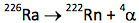
Each alpha particle has a charge of +2 and a mass of 4. Most have an initial kinetic energy of about 5 MeV. They are frequently accompanied by high energy gamma rays. Almost all radionuclides that decay by alpha emission have atomic number greater than 83 (bismuth). See Krane ch. 8.
Properties of α‐ particles
Because of their +2 charge and relatively low velocity, alpha particles are densely ionizing, depositing an enormous amount of energy at each collision with an attenuating atom. Thus, they lose all of their kinetic, ionizing energy after travelling a very short distance in any medium. A thin piece of paper, or the layer of dead cells on your skin surface, will completely attenuate a beam of alpha particles. Therefore, alpha particles pose no external hazard. However, if ingested, they can deliver a very large radiation dose to tissue. For example, radium is in the same column of the periodic table of elements as calcium, and is a bone seeker. Ingestion of radium can cause a very large radiation dose to blood‐ forming cells.
Beta
The beta particle is an electron that has been ejected from a neutron‐rich nucleus. It differs from an electron only because it is a product of radioactive decay. This leads us to observe that the neutron is essentially a proton with an attached electron. During the radioactive decay event, the neutron reverts to a proton, an energetic electron and a neutrino that escapes the nucleus. For example,
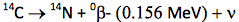
The maximum kinetic energy of the beta particle, in this example 0.156 MeV, can range from as low as 0.019 MeV for a 3H decay to as high as 1.7 MeV for a 32P decay, or 3.3 MeV for a 214Bi decay. The higher energy particles are more penetrating. See Table 1.1 for other examples of beta emitters.
Unlike the discrete energies observed for alpha particles and gamma rays, the average kinetic energy of all beta particles from a given isotopic sample is about one‐third the maximum energy that is possible for that isotope. See Figure 1.1. The maximum and average are characteristic for the isotope. For a low energy beta particle, we might ask where the missing energy has gone. To explain this, Pauli postulated the existence of a new particle, the neutrino (ν), emitted simultaneously and sharing the energy of the decay event with the beta particle. Neutrinos have little mass and no charge, and do not frequently interact with matter.
Properties of β‐ particles
As with alpha particles, beta particles are completely attenuated by small thicknesses of common materials. SeeFigure 1.2. They pose an external source of radiation dose to the skin and eyes. A beta emitter can also cause radiation dose if ingested.
A low atomic number material such as plastic is used for shielding a beta emitter. The dose rate from a point beta source with energy greater than 0.5 MeV is:
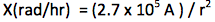
Where X is the dose rate measured in rad/hr, A is activity in Ci, and r is distance in cm. For example, the beta dose rate at 3 cm from a 1 mCi vial of P‐32 is:
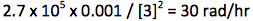
Positron
A few isotopes, such as 11C, 13N, and 18F, decay by positron emission. A positron, the anti-particle of a beta particle, is emitted by a proton-rich nucleus. It has the same mass as an electron, but carries a positive charge. During the decay event a proton converts to a neutron and a positive electron, or positron, which is ejected from the nucleus. The range and specific energy loss of positrons is about the same as that of negative beta particles, but they are different in that they annihilate with an electron from the absorbing material at the end of their track, yielding two 0.511 MeV photons. That interaction represents a conversion of mass to radiant electromagnetic energy.
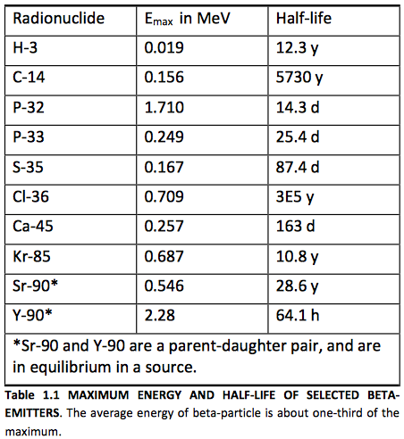
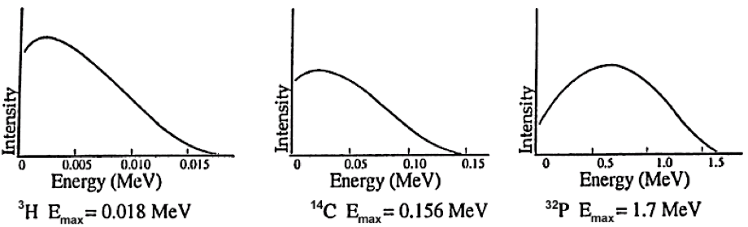
FIGURE 1.1 TYPICAL BETA‐SPECTRA
FIGURE 1.1 TYPICAL BETA‐SPECTRA. Beta spectra demonstrate two characteristics: maximum beta particle energy; the average beta particle energy (typically about one‐third of the maximum).
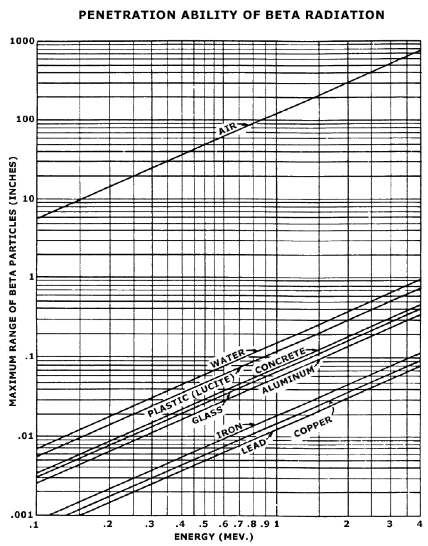
Penetration Ability of Beta Radiation
FIGURE 1.2 MAXIMUM RANGE OF BETA‐PARTICLES AS A FUNCTION OF ENERGY IN THE VARIOUS MATERIALS INDICATED. From Radiological Health Handbook, p. 122.
Beta‐Gamma
Most beta emitters decay to an excited daughter state that releases excess energy from the nucleus as a gamma ray. A gamma ray is simply a high energy photon emitted by a nucleus during its transition from a higher energy excited state to a lower energy unexcited state. Gamma rays are always preceded by a charged particle decay, most commonly a beta‐event. For example,
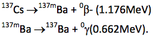
Although the second decay, called an isomeric transition from the metastable state to the ground state, has a half‐life of 2.54 minutes, we seldom chemically separate the 137mBa daughter from the 137Cs parent. Thus, it is not uncommon to colloquially refer to a “.662 MeV cesium‐137 gamma ray,” although it in fact emanates from a metastable barium nucleus. See Krane ch. 10.
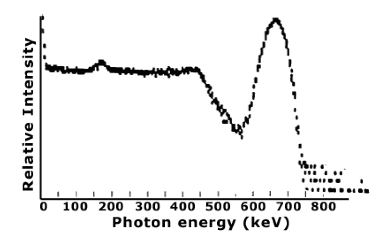
Typical Gamma Ray Spectrum
FIGURE 1.3 TYPICAL GAMMA RAY SPECTRUM. The spectrum of gamma rays emitted by a given isotope have distinct, characteristic energy peaks that permit identification of the isotope. This is Cs‐137 spectrum taken with a NaI (TI) detector.
Isomeric transition
If a metastable daughter is sufficiently long‐lived, it can be chemically separated from the parent, thus yielding a pure gamma emitter. The most important example is
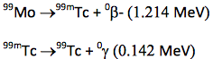
The half‐lives of the reactions are 2.7 days and 6.0 hours respectively. Thus it is possible to chemically separate 99mTc from its parent sample of 99Mo, yielding a pure gamma emitter sample with a half‐life of 6.0 hours. Tc‐99m is the radionuclide of choice for non‐invasive nuclear medicine imaging.
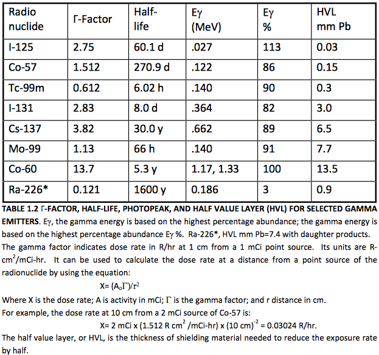
Internal conversion
If an excited, metastable nucleus goes to its ground state by transferring its energy to a valence electron that is ejected, the process is called internal conversion. This is observed more frequently in heavy nuclei; gamma decay is the preferred mode for lighter nuclei.
Electron capture
Some proton‐rich radionuclides decay by electron capture. An orbiting electron, usually from the K‐shell, enters the nucleus and combines with a proton to yield a neutron. Its vacancy is filled by a cascading valence electron, which releases its excess energy as a characteristic x‐ray. Alternatively, the excess energy can cause the ejection of a valence electron, called an Auger electron.
Spontaneous fission
A few very massive nuclei, such as Cf‐252, can decay by spontaneous fission. About 97% of Cf‐252 atoms decay by alpha emission. The remaining 3% of the neutron‐rich nuclei split into two lighter nuclei, with the release of an average 3.8 neutrons per fission event.
Neutrons
Small neutron sources can be fabricated by mixing an alpha‐emitter such as 238Pu or 241Am with 9Be, which has a loosely bound neutron. The nuclear reaction is:
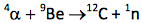
These sources are commonly used in physics and analytical chemistry experiments when a low‐flux neutron source is needed.
1.3Properties of Radioactivity and Units of Measure
Characteristic decay scheme
The modes and characteristic energies that comprise the decay scheme for each radioisotope are specific. If instrumentation is sufficiently sensitive, it is possible to identify which isotopes are present in a sample, or alternatively, to measure only the radioisotope of interest within a sample containing several radioisotopes.
Half‐life (T1⁄2)
Probably the best known property of radioactivity is the half‐life T1⁄2. After one‐ half life has elapsed, the number of radioactive decay events in a sample per unit time will be observed to have reduced by one‐half. The decay rate or activity at any time t can be described mathematically:
At = A0 e‐.693 t/T1⁄2
e-.693 is equal to 1⁄2, and the exponent t/ T1⁄2 describes the number of elapsed half‐lives. Therefore, t and T1⁄2 must be expressed in the same unit. For example, the half‐life of I‐131 is 8.0 days. If a vial were labeled “29 mCi at 1pm June 3,” the activity in the vial at 1am June 6 is:
29 mCi e‐.693 (2.5/8.0) =23 mCi
Alternatively, if n is the number of elapsed half‐lives, then:
At = A0(1/2)n
29 mCi (1/2) 0.31 = 23 mCi
Half‐lives range from billionths of a second to billions of years. The half‐life is characteristic of the radioisotope, and cannot be inferred. The half‐life is included with the description of the decay scheme.
Decay constant (λ)
The number of decay events in a sample per unit time, or activity A, is proportional to the number of radioactive parent atoms N in the sample; A = ‐λ N. For example, the decay constant for 99mTc is 0.115/hour. The half‐life is related to the isotope’s decay constant; λ = .693 / T1/2. Thus, we can also write the decay equation:
At = A0 e‐λt
For example, if a vial contains 100 mCi of Tc‐99m at 7 am, the activity at 7 pm is:
100 mCi e‐0.115/hr x 12 hr = 25 mCi
When using any of these equations, be sure that the same unit of time, whether hours or years, is used to measure both half life T1/2, or decay constant, and elapsed time t.
Measures of activity (A)
The number of disintegrations, or decay events, or nuclear transformations, in a sample per unit time is its activity A. Two common informal units are disintegrations per second and disintegrations per minute.
Curie (Ci)
The US unit of activity is the curie (Ci). One curie is 2.2×1012 disintegrations per minute, or 3.7×1010disintegrations per second. Common multiples are the millicurie and microcurie.
Becquerel (Bq)
The SI unit of activity is the becquerel (Bq). One becquerel is 1 disintegration per second. The common multiple is the megabecquerel. Note that 1 mCi = 37 MBq.
1.4Electronic Sources of Ionizing Radiation
Production of x‐ rays
Radioactivity is not the only source of ionizing radiation. Electrons are emitted by a filament heated with an electric current; the process is called thermionic emission. If the electrons are then accelerated through an electric potential of several kV to several MV, and then stopped instantly in a high atomic number metal target anode, some of their kinetic energy can be converted to high energy photons called bremsstrahlung radiation, from the German term for braking radiation. This radiation is more commonly known as x‐rays. However, most of the kinetic energy is converted to heat.
For electrons incident on a thick target, the fraction F of energy converted to x‐ rays is approximately:
F=7×10‐4 Z Ek
Z is the atomic number of the target, and Ek is the accelerating voltage in MV. Therefore, a 1 MV electron beam accelerated to a tungsten
(Z = 74) target will be about 5% efficient in the production of x‐rays.
F=7×10‐4 x74x1=0.052
The other 95% of the kinetic energy of the electrons is converted to heat.
Because x‐ray production is directly proportional to the atomic number of the target and the accelerating voltage of the device, reducing both variables can dramatically reduce the x‐ray output of a device. This explains why electron microscopes, cathode ray tubes, and television tubes are not significant sources of x‐ray exposure. Although they also have a heated filament and a beam of accelerated electrons, the target is a low Z material, and accelerating voltages are typically 20 kV to 50 kV. Because the maximum x‐ray energy cannot exceed the accelerating voltage, most of the x‐rays produced cannot penetrate the glass envelope used to contain the vacuum.
X‐ray spectra
An x‐ray spectrum is continuous, with energies ranging from near 0 keV to the maximum applied voltage. Intensity spikes at energies that are characteristic of the metal used to make the target are superimposed. See Figure 1.3. This process forms the basis for radiographic internal imaging in medicine. It is also used extensively in crystallography studies.
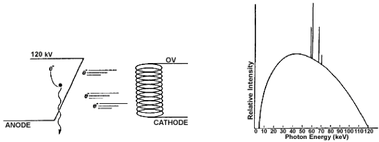
FIGURE 1.4 X‐RAYS. (a) x‐rays are produced when an electron loses kinetic energy while interacting with a target nucleus. (b) x‐ rays demonstrate a continuous bremsstrahlung spectrum with spikes that are characteristic of the anode target material, in this case tungsten. The maximum x‐ray energy, when expressed in keV, is equal to the voltage applied between the cathode and anode, in this case 120 kV. The average x‐ray energy is about one‐third of the maximum.
X‐ray diffraction and x‐ray fluorescence
A special word of caution is appropriate for those who use analytical x‐ray devices. Although the beam is narrow, its intensity can be 500 rads per second at the sample, and 10,000 rads per second at the x‐ray tube window. Just a few minutes handling a sample with the beam on could cause ulceration that can only be treated by amputation.
The dose rate for your unit can be calculated:
X (rad/sec) = 50 x V (kV) xI (mA) x Ztarget / [r (cm)]2 x74
For example, the dose rate at 2 cm from a copper target operated at 80 kV and 100mA is:
50 x 80 x 100 x 29/ (2)2 x 74=39000rad/sec
For a further discussion, see Health Physics. 15(6):481‐486, December 1968.
Neutrons
Neutrons can be created by bombarding targets with high energy photons:
γ + 9Be → 8Be + 1n,
or accelerated charged particles, for example deuterons:
2d+ 3He→4He+1n
1.5Interactions of Particulate Radiation With Matter
Alpha particles
The alpha particle, comprised of two protons and two neutrons, is very massive, has high kinetic energy, and a charge of +2. Due to its relatively low velocity, it leaves a dense track of ionizations caused by coulumbic interactions. An alpha particle can penetrate about 3 cm of air, but only a few microns of tissue.
Beta particles
The beta particle is a high speed electron, with a charge of ‐1, ejected from a nucleus. The beta particles from a given isotope have a continuous spectrum of energy that is characterized only by the maximum energy associated with the isotope. Depending on the maximum energy, beta particles can penetrate a few microns to a few centimeters of tissue. They also leave a moderately dense track of ionizations caused by coulumbic interactions. Like the electronic devices described above, beta particles will produce x‐rays when absorbed by a target. The fraction of beta energy converted to x‐rays is approximately:
F=3.3×10‐4 ZEmax
Z is the atomic number of the target, and Emax is the maximum beta energy in MeV. This relationship explains why we use low Z materials to shield beta sources. There is less bremsstrahlung production.
Neutrons
Depending on their source, neutrons can range in energy from as high as tens of MeV to 0.015 eV. Because they are uncharged, they interact primarily by physical collision with absorber nuclei. The collisions are characterized by conservation of momentum and kinetic energy, and are called elastic.
1.6Interactions of Photons With Matter
Gamma rays and x‐rays
Gamma rays and x‐rays are both forms of electromagnetic radiation. They differ only in their source. A gamma ray emanates from the nucleus of a radioactive atom. An x‐ray emanates from outside the nucleus of a radioactive atom, or from an electron as it changes direction when passing an atomic nucleus; this latter type of x‐ray is called bremstrahlung. All are collectively referred to as ionizing photons.
Photon interactions
Because it is not charged, a photon does not interact by coulumbic force, but rather only by interaction with an electron. The two most common forms of interaction are the photoelectric effect, .Figure 1.5, and Compton scattering, Figure 1.6.
The probability of these events depends on the absorbing medium and the photon energy. The photoelectric effect predominates for low energy photons (less than 100 keV). Its probability increases dramatically with Z. The Compton effect predominates for moderate to high energy photons (more than 100 keV). See Hendee ch 4. These facts drive our selection of shielding materials.
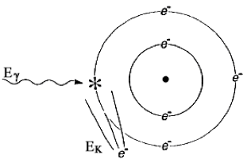
FIGURE 1.5 THE PHOTOELECTRIC EFFECT. The photon is completely absorbed. Its energy Eγ liberates an electron bound with energy EB, and provides it with kinetic energy EK. Mathematically, EΚ = Eγ ‐ EB
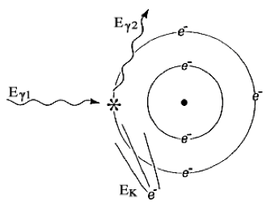
FIGURE 1.6 COMPTON SCATTER. An incident photon with energy Eγ1 liberates an orbiting electron, yielding a recoil electron with kinetic energy EK and a lower energy scattered photon with energy Eγ2 Mathematically, Eγ1 = EK + Eγ2
Other interactions
Low energy photons can also interact by coherent scattering. High energy photons can also interact by pair production and photodisintegration. Coherent scattering is generally not of interest in radionuclide laboratory setting and will not be discussed. High energy interactions are of interest in shielding high energy accelerators.
Attenuation
The reduction of intensity I of a photon flux is called attenuation. The mathematics of attenuation of ionizing photons in an absorber is identical to the mathematics of half‐life. However, we use the terms thickness x, half value layer HVL, and linear attenuation coefficient μ in place of time t, half‐life T1/2, and decay constant λ. If one half value layer of shielding is added, the dose rate will be reduced by one‐half. For a shielding thickness x, the intensity can be described mathematically:
Ix = I0 e‐.693 x/HVL
e‐.693 is equal to 1⁄2, and the exponent x/HVL describes the number of half value layers. Alternatively, if n is the number of half value layers, then:
Ix = I0 (1/2)n
Half value layers typically range from millimeters to centimeters, depending on the energy of the radiation and the elemental composition of the attenuating medium. Glass, concrete, steel, lead, and depleted uranium are all commonly used as shielding. See Figure 1.9.
As noted before for half‐life and decay constant, the half value layer and linear attenuation coefficient are related: μ = .693/HVL. Thus, we can also write:
Ix = I0 e‐μx
When using either equation, be sure that the same unit of thickness, whether centimeters or millimeters, is used to measure both HVL and attenuation constant, and applied thickness.
1.7Measurement of Radiation and A Unit of Exposure
There are seven basic methods used in the institutional setting for measuring ionizing radiation. The method selected depends on the type and amount of radiation to be measured, the requisite sensitivity, the time available for the measurement, and equipment cost.
Gas detectors
One of the oldest methods of measuring ionizing radiation is the gas detector. A simple design would be comprised of no more than an anode and cathode that define a volume in space, a voltage supply, and an ammeter. See Figure 1.7.
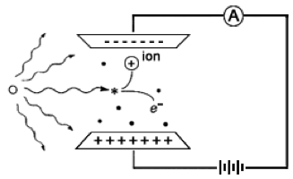
FIGURE 1.7 A SIMPLE GAS DETECTOR. A simple gas detector is comprised of an anode, cathode, voltage supply, and ammeter.
Characteristic curve
Gas detectors demonstrate a characteristic curve of signal strength as a function of applied voltage; see Figure 1.8. In all cases the signal is initiated when a photon or charged particle ionizes a gas molecule in the detector volume.
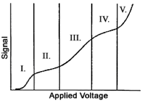
FIGURE 1.8 THE CHARACTERISTIC CURVE FOR GAS DETECTORS. The exact shape of this curve would be different for each detector design, but the five different regions would be observed. They are: I‐ recombination; II‐ionization; III‐ proportional; IV‐GM; and V‐continuous discharge.
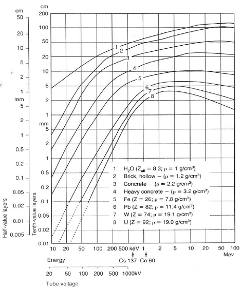
FIGURE 1.9 HALF VALUE LAYER FOR PHOTON ENERGIES FROM 10 KEV TO 100 MEV. SEE HANDBOOK OF HEALTH PHYSICS AND RADIOLOGICAL HEALTH CHAPTER 6.
Recombination
If the applied voltage is very low, after an ionization event, the negatively‐ charged electron and the positively‐charged ion will be electrostatically attracted to each other, and will recombine. There will be no signal from the detector.
Ionization
If the applied voltage is just sufficient to collect all the released electrons on the anode, and provide replacement electrons from the cathode, we observe a current that is proportional to the exposure rate. A gas detector operated in this mode is called an ionization chamber. Refer to Knoll ch. 5.
Ionization chamber survey meters are used to measure external radiation dose rate to individuals at levels of about 0.1 millirem per hour or greater. Their use at lower dose rates is limited due to the small electrical signal. The instrument can give false low readings if used to measure intense pinhole beams such as a leak from an x‐ray diffraction unit, or intense pulsed radiation, such as from an accelerator.
Small, electrically charged pocket ionization chambers are used to measure whole body dose for individuals who occasionally work in a radiation area, or who may be exposed to a high dose rate while performing a special task.
Roentgen, a measure of exposure
The ionization chamber in Figure 1.7 leads us to the first well‐defined unit of radiation exposure, the roentgen (R). The roentgen was originally defined as the amount of ionizing x‐ray exposure that would liberate 1 electrostatic unit of negative or positive charge per cubic centimeter of air. Now considered obsolete, it is approximately equivalent to a rad or a rem of radiation dose. Those units are discussed later.
Proportional counter
If the applied voltage is increased, rather than collecting an electrical current, each individual ionizing particle can cause a cascade of secondary ionizing events that are detected as an electrical pulse. The process is called gas multiplication. The magnitude of the electrical pulse is proportional to the energy of the particle that initiated the signal. Thus, for a fixed applied voltage, the signal from a 4.9 MeV 241Am alpha particle will be almost three times larger than the signal from a 1.8 MeV 32P beta particle. See Knoll ch. 6.
Proportional counters are commonly used for measuring environmental and laboratory contamination survey samples.
Geiger‐Mueller (GM) tubes
If the voltage is increased further, an individual particle can cause a complete ionization of the gas in the detector. Any ionizing particle, whether high or low energy, whether charged or uncharged, that interacts with the detector gas generates a large electrical pulse. A detector operated in this mode is called a Geiger‐Mueller, or GM detector. A GM instrument can become paralyzed and give a false‐low reading in continuous high dose rate fields or pulsed fields. See Knoll ch. 7.
GM tubes are commonly used as survey instrument detectors because the complete instrument is relatively inexpensive, lightweight, and rugged. Note that, although a GM survey instrument may have a “millirem per hour” exposure scale, the calibration is valid only for the radiation source used to calibrate the instrument, usually Cs‐137. Depending on the type of radiation encountered in the laboratory and its energy, this instrument may indicate low to five‐ or ten‐ fold high when used to measure dose rates. Thus, it must be calibrated for the radionuclide of interest if accurate measurements are needed.
GM survey meters are often used to conduct cursory contamination measurements. The meter indicates “counts per minute”; contamination action levels are expressed in “disintegrations per minute.” Because the GM detector is energy sensitive, readings must be corrected for the detection efficiency for the radionuclide of interest. Typical efficiencies are provided in Table 3.4.
Continuous discharge
If the voltage in the gas detector were increased further, the positive charge on the anode would pull electrons off the cathode and there would be a continuous signal whether ionizing radiation were present or not. This is referred to as continuous discharge. A detector operating in this region cannot be used as a measuring tool.
Film
The earliest radiation detector was photographic film. The unexpected darkening of photographic plates led Wilhelm Roentgen to the discovery of x‐ rays in 1895. An ionizing particle disrupts the silver bromide crystals in the film emulsion, allowing the silver to be precipitated onto the film substrate during processing. A greater radiation dose to an area of film results in a darker image.
Film is used for medical imaging; see Bushberg ch. 9 and 13. It is also used in film badge to measure personalwhole body dose. A small film sandwiched between metal and plastic filters in a plastic holder provides a personal monitor that can measure penetrating and non‐penetrating dose. See Figure 1.10. The amount of darkening under each filter sandwich is a function of dose. Only higher energy penetrating radiation will darken the film within the metal sandwich; beta dose will darken the film in the open window of the badge. See Cember ch. 9.
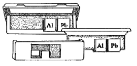
FIGURE 1.10 TYPICAL FILM BADGE. The film badge is comprised of a plastic holder, metal filters, and a film packet with slow and fast emulsions.
Thermo‐ luminescent dosimeters (TLDs)
Some crystals, such as LiF, store ionizing radiation energy when valence electrons are moved to higher energy “traps” within the crystal matrix. The trapped electrons are released by heating the crystal. When they return to the lower valence energy level, the difference in energy is released as visible light. The amount of visible light released is proportional to the radiation dose absorbed by the crystal. The process is called thermoluminescent dosimetry.
TLDs can be used to measure patient dose in diagnostic radiology and radiation therapy. They are also used as extremity dosimeters to measure finger dose for individuals handling small, high activity sources or as a personal monitor.
Scintillation Counting
Some detectors convert a particle’s energy to visible light that can be measured with a photomultiplier tube (PMT). This is called scintillation counting. To measure non‐penetrating beta radiation, the sample is mixed with a liquid scintillant called a cocktail. To measure penetrating photon radiation, a solid state crystal detector is used. In either case, the charged particles, whether beta particles in liquid scintillation counting or the photoelectrons and compton electrons in x‐ray or gamma‐ray analysis, interact with the orbital electrons of the scintillator to create flashes of light. See Knoll ch. 8.
Liquid Scintillation counting (LSC)
To measure samples with beta emitters such as 3H, 14C, 35S, 32P, and 33P, the sample is added to a vial of liquid scintillation cocktail comprised of solvent and scintillant. The vial is then mechanically lowered into a light‐tight chamber that has two PMTs that detect the individual scintillation events.
NaI(Tl)
To measure samples with gamma emitters such as 125I or 99mTc, the sample can be placed beside a NaI(Tl) crystal that is optically coupled to a PMT; the entire assembly is enclosed in an aluminum envelope to keep out room light and humidity. The energy of the incident gamma ray is converted to a flash of light in the crystal. The PMT detects the individual scintillation events and their relative intensities.
“cpm” and “dpm”
Many types of radiation detection or measurement instruments indicate “counts per minute”; action levels are usually expressed in “disintegrations per minute.” Because all detectors are energy and geometry dependent, cpm readings must be corrected for the detection efficiency for the radionuclide of interest. Mathematically, dpm = cpm / efficiency. Typical efficiencies are provided in Table 3.4.
1.8Biological Effects of Radiation and Units of Dose
Shortly after its discovery, it was recognized that ionizing radiation can have adverse health effects. See Alpen, Introduction. In this section we examine the radiation dose that is a natural part of our environment, and the types of health effects associated with large acute exposures and with low dose rate chronic exposure.
Basic law of radiobiology
Early in the use of ionizing radiation, harmful effects were observed in individuals who had been exposed to large and repeated doses. In 1906 Bergonie and Tribondeau developed a hypothesis, since termed the Basic Law of Radiobiology, regarding biological effects of radiation: Biological effects are directly proportional to the mitotic index and the mitotic future of the exposed cell, and inversely proportional to the degree of differentiation. Mitosis refers to the natural division of a cell nucleus during cell reproduction; differentiation refers to the cell’s degree of specialization to perform a specific function in the organism.
Cell sensitivity
Following this law, the most sensitive cells include rapidly dividing, undifferentiated stem cells such as erythroblasts, intestinal crypt cells, primary spermatogonia, and basal cells in the epidermis. Rapidly dividing cells that are more differentiated, including intermediate stage spermatogonia and myelocytes, are less sensitive than undifferentiated cells but are still quite radiosensitive. Irregularly dividing cells such as endothelial cells and fibroblasts demonstrate intermediate sensitivity. Cells that do not normally divide but have the potential for division, such as parenchymal liver cells are relatively radioresistant. Non‐dividing cell lines such as muscle cells, nerve cells, mature erythrocytes, and spermatozoa are the most radioresistant. Some cells that would be predicted to be resistant to damage because they do not undergo division and are differentiated, such as the lymphocytes and ova, are nonetheless quite radiosensitive.
DNA as the target
All these cells appear to be affected because of DNA lesions and double strand breaks. The target in the lymphocytes and ova appears to be lipoprotein structures in the nuclear cell membrane rather than in the DNA itself. Damage can be produced directly by the interaction of the radiation with the biochemical target, or by interactions of the free radicals OH, e‐aq, and H that are the ionization products of water which have unpaired electrons, with the DNA or other targets. See Turner ch. 13.
Age, species, and fractionation
Other factors affect radiosensitivity. As expected, radiosensitivity is greatest during the fetal stage and becomes progressively smaller through adolescence and adulthood. Different species demonstrate different radiosensitivities. A large acute dose delivered at once would have a greater effect than the same dose administered over time as incremental fractions.
Rad and Rem
The US unit of dose is the rad; it is the deposition of 100 ergs of ionizing energy per gram of target material. The US unit of dose equivalent is the rem; for x‐, gamma‐, and beta‐radiation it is numerically equal to the dose in rad. Both are approximately equal to the exposure in roentgen. There are rad‐to‐rem correction factors as high as twenty to account for the greater radiation damage caused by alpha particles, neutrons, and high energy protons.
Gray and Sievert
The SI units for dose and dose equivalent are the gray (Gy) and sievert (Sv). 1 Gy = 100 rad. 1 Sv = 100 rem. The centigray equal to one rad and the millisievert equal to 100 millirems are commonly used.
Average natural background dose
The amount of radiation an individual receives is called the dose equivalent and is measured in rems. The average individual in the United States accumulates a dose equivalent of 0.3 rem from natural sources each year. Figure 1.11.
Variations in natural background
Natural background radiation levels are much higher in certain geographic areas. A dose of 1 rem may be received in some areas on the beach at Guarapari, Brazil in about 9 days. Some people in Kerala, India get a dose of 4 rems every year. In the US, the dose from natural radiation is higher in some states, such as Colorado, Wyoming, and South Dakota, primarily because of increased cosmic radiation at high elevations and natural high concentrations of uranium and thorium in the soil. Radiation dose can also be received from brick structures, from consumer products, and from air travel.
Medical Dose
Many people receive additional radiation for medical reasons. As of the year 2006, approximately 400 million x‐ray radiography examinations are performed in the United States. A typical two view chest x‐ray leads to an effective exposure of about 20 mRem. CT examinations deliver much higher doses than standard x‐rays. A typical whole trunk CT (chest, abdomen and pelvis) can be 1.5 rem.
Deterministic effects (also known as nonstochastic effects)
A clinically observable biological effect that occurs days to months after an acute radiation dose is a deterministic effect. Examples are skin reddening or swelling, epilation, or hematologic depression. Deterministic effects require a dose that is greater than a threshold, typically greater than tens or hundreds of rad. Dose limits are set so that occupational exposures will not cause deterministic effects. Examples are dose limits for the lens of the eye (15 rem each year) and for any single organ (50 rem each year).
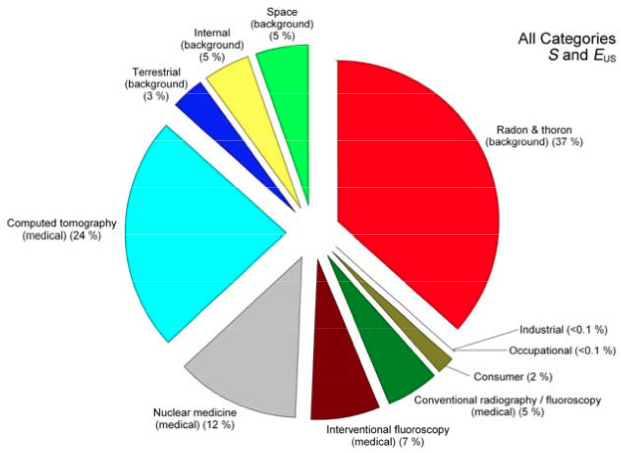
FIGURE 1.11 SOURCES OF RADIATION DOSE IN THE UNITED STATES. From NCRP 160, Fig 1.1. Percent contribution of various sources of exposure to the total collective effective dose (1,870,000 person‐Sv) and the total effective dose per individual in the U.S. population.
Deterministic effects are possible when using electronic devices such as x‐ray diffraction units (XRDs) or linear accelerators. An XRD beam is sufficiently intense to cause skin burns and ulceration that ultimately require amputation. The broad beam of a linear accelerator could cause cataracts or a lethal whole body dose within minutes. Thus it is imperative that interlocks and other safety features never be bypassed.
Stochastic effects
Radiation dose can increase the chance of contracting a cancer. This is an example of a stochastic effect. The increase in chance is assumed to be proportional to the dose, and it is assumed there is no minimum threshold. These two assumptions lead us to low worker and public dose limits. Scientists disagree on whether this conservative linear non‐threshold, or LNT, model is the best mathematical representation of the risk of cancer induction. The normal incidence of fatal cancer in an average North American population sample of 10,000 individuals is about 2000. If each individual in the sample were exposed to a 1 rem whole body dose, it is estimated there would be about 4 additional fatal cancers. See BEIR V ch. 3‐5.
Tissue weighting factors
In setting limits for doses to individuals, the LNT model also has been used to develop a factor that compares the cancer risk of dose to an individual organ to cancer risk of dose to the whole body. This is of interest when a single organ receives dose after ingestion of radioactivity, or when your body trunk is shielded with a lead apron but the head, neck, and arms are exposed. When the organ dose in rad is multiplied by the tissue weighting factor, the product is the effective dose or effective dose equivalent in rem. This allows a single, risk‐based additive dose quantity to be used to limit and record all exposures from penetrating radiation from outside the body and radioactivity inside the body.
Hereditary effects
A hereditary effect is one transmitted to offspring due to the irradiation of the parent egg or sperm cells. Although, it has been estimated based on experimental organisms that the chance of a severe hereditary effect is between 0 and 0.00006 per rem, the UNSCEAR 2001 Report on the hereditary effects of radiation emphasized that no radiation‐induced hereditary diseases have so far been demonstrated in human populations exposed to ionizing radiation. The normal chance of a birth defect is 0.03, about one‐fourth of which is considered of genetic origin.
Basis for dose limits
Radiation, like many things, can be harmful. A large dose to the whole body (such as 600 rems in one day) would probably cause death in about 30 days; but such large doses result only from rare accidents. Control of exposure to radiation is based on the assumption that any exposure, no matter how small, involves some risk. The 5‐ rem worker dose limit provides a level of risk of delayed effects that is considered acceptable by the NRC. The dose limits for individual organs are below the levels at which biological effects are observed. Thus the risk to individuals at the occupational exposure levels is considered to be very low. However, it is impossible to say that the risk is zero. See ICRP 60, Sec. 5. Thus our goal is to keep all radiation dose as low as reasonably achievable below the limits; see the discussion on p.23.
Dose limit for radiation workers
As a radiation worker, you may be exposed to more radiation than the general public. California and the Nuclear Regulatory Commission (NRC) have established a basic dose limit for all occupationally exposed adults of 5 rems each year.
Dose limit for minors and public
Because the risks of undesirable effects may be greater for young people, individuals under age 18 are permitted to be exposed to only 10 percent of 5 rem, the adult worker limits.
The limit for members of the general public is 0.1 rem.
Dose limit for pregnant workers
The National Council on Radiation Protection and Measurements has recommended that, because they are more sensitive to radiation than adults, radiation dose to the unborn that results from occupational exposure of the mother should not exceed 0.5 rem. California and the NRC have incorporated this recommendation in their worker dose limit regulations. See Table 2.1.
It is your responsibility to decide whether the exposure you are receiving from penetrating radiation and intake is sufficiently low. Contact Health Physics to determine whether radiation levels in your working areas could cause a fetus to receive 0.5 rem or more before birth. Health Physics makes this determination based on personnel exposure monitor reports, surveys, and the likelihood of an accident in your work setting. Very few work positions would require reassignment during pregnancy.
If you are concerned about exposure risk, you may consider alternatives:
a) If you are pregnant, you may ask to be reassigned to areas involving less exposure to radiation. Approval will depend on the operational needs of the department. Note, however, that no employer is required to provide a work environment that is absolutely free of radiation.
b) You could reduce your exposure, where possible, by decreasing the amount of time you spend in the radiation area, increasing your distance from the radiation source, and using shielding. Increased concern for lab cleanliness will reduce the chance of uptake.
c) You could delay having children until you are no longer working in an area where the radiation dose to your fetus could exceed 0.5 rem.
d) You can continue working in the higher radiation areas, but with full awareness that you are doing so at some small increased risk for your fetus.
Discuss these alternatives with your supervisor and Health Physics. A pregnancy declaration form appears in Forms. There is additional information in the discussion of dose limits in Chapter 2 of this manual.
1.9Alara Policy
Compliance with dose limits ensures that working in a radiation laboratory is as safe as working in any other safe occupation. The goal of the radiation safety program is to ensure that radiation dose to workers, members of the public, and to the environment is as low as reasonably achievable (ALARA) below the limits established by regulatory agencies. The program also ensures that individual users conduct their work in accordance with university, state, and federal requirements.
In the preface to this manual, management has committed to an ALARA policy.
1.10General Workplace Safety Guidance
Education, training, and procedures
Safe use of hazardous materials in the workplace depends on the cooperation of individuals who have been educated in the science and technology of the materials, who have technical training specific to their application, and who follow administrative and technical procedures established to ensure a safe and orderly workplace.
Security
No matter what source of radiation you work with, one way to enhance safety is to allow access only to those with business in the area. If you see unfamiliar individuals in the area, it is important to question them or call security. Regulatory agencies consider a high degree of security to be an important compliance matter.
Time
The less time we spend around a potentially hazardous material, the less the risk. If you are not needed in a work area, or if your task can be done elsewhere, leave.
Distance
Increasing our distance reduces the risk from any potentially hazardous material. For gamma radiation sources, the dose rate goes down rapidly with distance. Mathematically, I2 / I1 = r12 / r22. This is called the inverse square law. For example, if the dose rate is 100 mrem/hour at 5 cm from a point source, you can calculate the dose rate at 20 cm from the source:
I20cm / I5cm = (5cm)2 / (20cm)2
I20cm = (100 mrem/hr) x (5cm)2 / (20cm)2
I20cm = 6.2 mrem/hr
When working with high energy beta and gamma emitters, remote handling tools can dramatically reduce your hand dose.
Shielding
If the source is a high energy beta or gamma or x‐ray emitter, shielding will reduce the dose rate. For beta emitters, use a low atomic number material such as plastic. For gamma and x‐ray emitters, high atomic number materials such as steel or lead are preferred. However, remember that steel and lead pose their own drop and earthquake hazards. Lead is also a toxic material; use gloves when handling it and wash when you finish. Contact the hazardous waste staff to dispose of lead shielding that is no longer needed.
Clean, orderly laboratories
Most laboratories do not use amounts of radiochemicals that pose an external dose risk. However, area contamination can happen even when materials are carefully handled. Have in the work area only those things needed for the task at hand. Wear gloves and lab coat, and wash your hands after working. Use absorbent countertop paper to hold spills.
General guidance
Some detailed guidance on laboratory safety measures is provided in Table 1.3. Unless, due to special circumstances, your group has received an exception, you must follow the guidance in that table.
Plan ahead
Think about what you are going to do. What can go wrong? What can distract you? Have you reviewed the laboratory protocol? Are all the supplies that you need at hand? Have you checked laboratory and protective equipment to ensure they are working correctly? Have you practiced the entire procedure wearing your protective clothing and using the tools you need? Are you wearing gloves, coat, and impervious shoes? Do you know where the safety shower and eyewash are? Do you know what you are doing, and why?
Before you begin
Only individuals who have completed Stanford radiation safety training may use radioactive materials.
Review the chemical, radiation, and handling hazards precautions and safety guidance before you prepare for the experiment.
Order only approved radiochemicals and quantities. Log receipts. Completely update the storage log at least annually.
Store materials to cause minimal dose in work areas. Shield photon‐ and high‐ energy beta‐emitters so that the dose rate at 30 cm is less than 2 mR/hr for low occupancy areas, or 0.2 mR/hr for high occupancy areas. Provide secondary containment.
Do not store food or beverages in work areas, or use refrigerators, hot plates, or ovens that are used for radioactive materials work.
Eat and drink only at desk or lounge areas. No food or beverages are allowed in VAPAHCS laboratories.
Preparing for the experiment
Set up in a well‐ventilated work area. Use a fume hood for volatiles such as I‐125 and S‐35.
Keep the work area clean, neat, and uncluttered.
Provide secondary containment for spills.
Use plastic‐backed absorbent pads or trays to cover work areas.
Do not pipette by mouth. Use manipulators.
Wear your dosimeter (e.g., film badge) and ring if assigned.
Keep a survey meter nearby when using millicurie quantities other than tritium. Use a pancake GM for beta‐emitters and a NaI(Tl) for photon‐emitters.
During the experiment
Wear impervious shoes, gloves, lab coat, and safety glasses.
Open and dispense reagents behind a splash shield.
Use capped tubes in centrifuges and agitators.
Use activated charcoal to absorb organic vapors in incubators.
After the experiment
Label individual containers before placing them in storage.
Change bench covers to avoid cross‐contamination.
Survey glassware, apparatus, and central facility appliances. Decontaminate before releasing for house use.
Immediately report injuries or personnel contamination to your supervisor and Health Physics.
Promptly report >QLM spills to Health Physics.
TABLE 1.3 STANDARD WORK RULES FOR RADIOCHEMICAL LABORATORIES.
2Rad-Regulations for the Safe Use of Ionizing Radiation
2.110 CFR Part 19--Notices, Instructions, and Reports To Workers; Inspections
Part 19‐‐ Informed worker
10 CFR Part 19‐‐Notices, instructions, and reports to workers; inspections. This part establishes requirements for notices instructions, and reports by licensees to individuals participating in licensed activities, and options available to those individuals in connection with inspections of licensees.
Notices
§19.11 Posting of notices to workers. The regulations are summarized on forms RH 2364 and NRC 3, which must be posted. You may examine the regulations and any correspondence relating to licensed activities. Call Health Physics to make an appointment.
Instruction
§19.12 Instructions to workers. Anyone who works in a restricted area must be provided training in radiation safety, be instructed to observe regulations and operating procedures, and to report unsafe conditions.
Dosimetry
§19.13 Notifications and reports to individuals. At any time you may request a copy of your radiation exposure history. Indicate if you want an updated report each year. If dosimetry is required by regulations rather than provided in response to the project director’s request, you will be given a report each year.
Inspections
§19.14 Presence of representatives…, §19.15 Consultation with workers…, §19.16 Requests by workers for inspections. The Nuclear Regulatory Commission (NRC) and California Department of Health Services (DHS) conduct inspections of licensed activities. You may talk with the inspector privately if you want. If you have identified a radiation safety problem and do not believe it has been properly dealt with, you may request an inspection.
2.210 CFR Part 20‐‐Standards for Protection Against Radiation
Alara
§20.1101 Radiation protection programs. The radiation protection program ensures compliance with regulations. Its goal is to ensure that doses to workers and members of the public are as low as reasonably achievable (ALARA) below state and federal limits.
Dose Limits
§20.1201, §20.1207, §20.1208, and §20.1301. Dose limits for workers and the public. Dose limits have been established for adult workers, minor workers, declared pregnant women, and members of the public. The limits are in Table 2.1.
Whole body dose in one year
Other limits
Adult workers
5 rem
Lens 15 rem each year. Skin, organ, extremities in one year: 50 rem
Minor workers
10% of Adult Limit
10% of Adult Limit
Declared pregnant woman
0.5 rem fetal dose
50 millirem fetal dose each month. Skin, lens, extremities: same as adult worker
Members
of the public
0.1 rem
2 mrem in one hour
Table 2.1 DOSE LIMITS FOR ADULT WORKERS, MINOR WORKERS, DECLARED PREGNANT WOMEN, AND MEMBERS OF THE PUBLIC. The dose is the sum of the body dosimeter deep dose plus internal effective dose equivalent from ingested or inhaled radionuclides. Internal dose is uncommon in the institutional setting. Our goal is to keep radiation dose below 10% of these limits.
Surveys
§20.1501 Surveys. Surveys must be made to demonstrate compliance with the regulations and to evaluate the potential for radiological hazard that may be present.
Security
§20.1801 Security of stored material. Radioactive material in controlled or unrestricted areas must be secured from unauthorized removal.
Radiation Symbol
§20.1901. Caution signs. The standard radiation symbol appears in Figure 2.1. It is magenta, purple, or black on a yellow background.
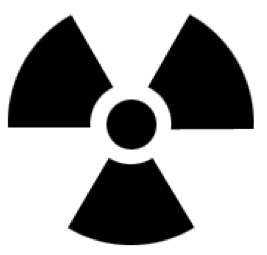
FIGURE 2.1 RADIATION SYMBOL. It is magenta, purple, or black on a yellow background.
Posting Requirements
§20.1901 and §20.1902 Posting requirements. The appropriate posting depends on the dose rate or amount of radioactivity in the area or container. Thresholds are provided in TABLE 2.2.
Condition
Posting
5 mrem in 1 hour at 30 cm from the source or shield surface
Caution, Radiation Area
100 mrem in 1 hour at 30 cm from the source or shield surface
Caution,
High Radiation Area
500 rads in 1 hour at 1 m from the source or shield
§20.1901, §20.1904, and 20.1905 Labeling requirements. Containers with greater than Quantities of Licensed Material Requiring Labeling must be labeled with the radiation symbol, the words “Caution, Radioactive Material,” and appropriate precautionary information such as radionuclide, activity, date, dose rate at a specified distance, and chemical form.
Package receipt, opening, and disposal of empty containers
§20.1906 Receiving and opening packages. All non‐clinical radioactive materials must be shipped directly to the Health Physics Inspection Station (See Part 3 Ordering and receiving radioactive material for further information). After delivery to the laboratory, review the safety instructions provided by Health Physics and inspect the package for leakage and correctness of contents. If a package appears damaged, promptly contact Health Physics and monitor for dose rate and contamination. If certain thresholds are exceeded, Health Physics must notify the carrier, the Department of Public Health and the Nuclear Regulatory Commission.
If you receive material directly and it has not been inspected, inform Health Physics promptly, and if requested, bring the package to the Inspection Station.
Before discarding empty containers and shipping packages, survey them to ensure that they are not contaminated. Then remove or deface all radiation labels and words. This assures that if the package gets out of the house waste stream it will not be mistaken for a radiation source.
Waste
§20.2001, §20.2003, §20.2005 Waste disposal. Radioactive waste can only be disposed of by transfer to a waste contractor, decay‐in‐storage, release in effluents, or discharge to the sanitary sewer
Records
§20.2101 Units. Records must have measures recorded in units or multiples of curie, rad, and rem (e.g., mCi, dpm).
Reports
§20.2201, §20.2202, §20.2203 Reports and notifications. Certain types of events require prompt reporting to regulatory authorities. If there is a theft, loss, more than a minor spill, accidental release, or injury involving radioactive material, report it promptly to Health Physics.
Precaution
When making an event report, do not simply leave a recorded message or a note on someone’s door. Talk with a member of Health Physics or EH&S, your project director, or the department chair. This assures that there will be prompt, appropriate follow‐up.
2.310 CFR PART 35‐‐Medical Use of Byproduct Material
There are extensive regulations governing medical use and human research. They cover general administrative and technical requirements, and prescribe detailed precautions for specific diagnostic and therapeutic clinical procedures. Because they apply only to radiology, nuclear medicine, and radiation therapy, they will not be further discussed here.
2.4TITLE 17‐‐California Code of Regulations
California imposes additional requirements for x‐ray installations. These requirements are not under NRC jurisdiction. The radioactive materials requirements are comparable to NRC’s byproduct materials requirements.
There are additional engineering and survey requirements for x‐ray installations. Because they apply primarily to the design of proposed installations, they will not be discussed.
It is imperative that you do not bypass safety features, and that you report safety features that do not appear to be working.
2.5Responsibilities
Safe use of ionizing radiation requires the cooperation of many individuals and committees. Their responsibilities are described below.
Principle investigators
Each Principal Investigator (PI) or project director is responsible for ensuring individuals are trained to do their tasks safely, supervising them, making the lab available for inspection at any work time, and ensuring that the project is managed in accordance with the application, the administrative and technical requirements in this manual, and the Hazards Evaluation.
The PI bears the additional responsibility of setting an example for the project staff. Appropriate attention to details, such as strict adherence to standard work rules, accurate survey records, and timely return of dosimeters (e.g., film badges) can affect the work environment and the attitude of individuals.
Individual Users
Each individual user is responsible for following the procedures in this manual and instructions from supervisors and Health Physics, and reporting possible safety problems and incidents.
Administrative Panel on Radiological Safety
The Administrative Panel on Radiological Safety (APRS) oversees the entire institutional radiation safety program for both Stanford and VAPAHCS. It also reviews applications that are outside the jurisdiction of the local control committees.
Local Control Committees
Each Local Control Committee (LCC) is responsible for reviewing applications in its jurisdiction to provide assurance that the work can be done safely and in accordance with the requirements in this manual and the Hazards Evaluation. There are two local control committees: Non‐Human Use Radiation Safety Committee (NHRSC) and Clinical Radiation Safety Committee (CRSCo) for human use applications. The Radioactive Drug Research Committee (RDRC) is a subset of CRSCo. These committees also oversee VAPAHCS projects.
Health Physics
Health Physics, a division of the Stanford University Department of Environmental Health and Safety (EH&S), is the institutional radiation safety program. It also provides radiation consultation. The Radiation Safety Officer, who is identified on the radioactive materials license, is the manager of Health Physics.
2.6Words of Caution
Compliance with requirements
The privilege to use ionizing radiation in medical care, research, and teaching is granted to Stanford and VAPAHCS by the state and federal governments. Health Physics tries to provide users the flexibility needed, consistent with established policy and regulations. There may be some administrative or technical requirements that may not appear necessary in some cases. However, non‐ compliance jeopardizes not only your project, but the entire community.
Falsification of records is a criminal offense
Do not falsify records, or mislead a state or federal inspector. There are institutional and criminal penalties for such actions. They can have severe adverse effect on your academic or professional career.
If you have made a mistake, request assistance to correct it. If you have failed to make a survey or record of use, note that in the record; do not fabricate records.
3Administrative and Technical Procedures
3.1General
Project Directors
Project Directors must qualify as Principal Investigators (PI). This privilege is limited to faculty or certain senior research associates, or their equivalents at the VAPAHCS and the other institutes operating under the university license.
Access for inspection
Health Physics typically schedules inspections to avoid interrupting the laboratory calendar. However Health Physics must have access to laboratories at any time to observe work and perform radiation surveys.
Security
Regulatory agencies require a high degree of security to prevent unauthorized access to and use of radiation sources. At Stanford, radiochemical stock solutions and sealed sources greater than C‐level (see Table 3.2) must be stored under lock. In new open architecture buildings, such as CCSR or Clark, all stock vials must be stored under lock. At VAPAHCS, all licensed material, whether it is stock, in use, or waste, must be stored under lock. Radiation devices must be locked out at the console. Do not prop security doors open.
Liquid scintillation cocktail
The APRS recommends biodegradable liquid scintillation cocktail (LSC). Special application and authorization is required for non‐biodegradable cocktail. If it a non‐ biodegradable cocktail is necessary, explain why in the application section that discusses materials or instrumentation.
Mixed waste
Discarding mixed radiologic and chemical hazardous waste is expensive. Make every effort to reduce or eliminate its generation. Special authorization is required prior to generating mixed waste. See pages 36, 55, and 58.
Permitting procedures for radioactive materials
Permitting procedures for radioactive materials require a Controlled Radiation Authorization (CRA) issued by a Local Control Committee (LCC).
There are two LCCs. The Clinical Radiation Safety Committee (CRSCo) reviews all procedures that involve administration of ionizing radiation to humans. The Non‐ Human Use Radiation Safety Committee (NHRSC) reviews laboratory use of radiochemicals and radiation producing machines within Stanford and VAPAHCS.
μCi
μCi
μCi
H‐3
1000
Co-57
100
Tc‐99m
1000
C-14
100
Co‐60
1
In‐111
100
F-18
1000
Ni‐63
100
Sn‐113
100
Na‐22
10
Zn‐65
10
I‐123
100
P‐32
10
Zn-69
1000
I‐125
1
P‐33
100
Ga‐67
1000
I‐131
1
S-35
100
Se‐75
100
Xe‐133
1000
Cl‐36
10
Rb‐86
100
Cs‐137
10
Ca‐45
100
Sr‐85
100
Hg‐203
100
Cr‐51
1000
Y‐88
10
Tl‐201
1000
Fe‐55
100
Y‐90
10
Ra‐226
0.1
TABLE 3.1 QLM QUANTITIES. This table provides the quantities of licensed material (QLM) requiring labeling for the most commonly used radionuclides. For other radionuclides, use the values in Quantities of Licensed Material Requiring Labeling.
3.2Controlled Radiation Authorizations (CRAS) for Radioactive Materials
General
To obtain a Controlled Radiation Authorization (CRA) the PI must submit a CRA application and obtain the approval of the appropriate LCC or the APRS. All radioactive materials must be specified.
Application format
Send an application to Health Physics that provides the following information. If the following instructions are not clear, if you need assistance, or if you have special circumstances, please call. You may submit a hard copy, fax, or e‐mail. For an application form go to https://radforms.stanford.edu
Facilities
1.a. Facilities. Identify the department, and list receiving, storage, work, and waste areas. Facilities must be adequate for the safe use of the materials. Benches must have impervious surfaces; secondary containment is needed both in work and storage areas; floors must be sealed and waxed if unsealed radioactive materials are handled. Materials must be secured against unauthorized removal; materials in common use areas must be locked when unattended.
A list of rooms is e‐mailed out each quarter for updating by the Health Physics contact.
Ventilation
1.b. Ventilation. Describe enhanced ventilation, fume hoods, and biological containment hoods. These must be working and fume hoods must be checked within the last year for flow rate, typically 100 to 180 feet per minute and with the proper sash height marked. An externally‐exhausted biosafety cabinet is required for using volatile iodine in conjunction with pathological or infectious agents.
Personnel
2. Personnel. Identify the Project Director, senior staff members who will directly supervise the project, and other personnel participating in the project. Identify the individual who will serve as Health Physics contact; this individual coordinates day‐to‐ day radiation safety activities such as room surveys and reports. Note if individuals under age 18 will be in the lab.
For the PI, key supervisors, and Health Physics contact, provide work telephone, fax, e‐ mail, mail code, department, building and room, and SUNetID if available.
Lists of personnel, inventory, assigned rooms, sealed sources and instruments are mailed out each quarter for the Health Physics contact to update.
Proposed materials
3. Materials. For each radionuclide that will be used, provide: radionuclide; chemical forms; maximum quantity to be used per experiment and frequency of experiments; maximum quantity to be obtained per order; and maximum to be possessed at any time. For scintillation cocktails, please provide information on whether it is biodegradable, recommended, or has other hazards associated with it. See page 56.
Characterize volumes as milliliters or liters, and identify other hazardous materials such as toxic chemicals, corrosives, or pathogens that might be mixed with radioactivity. See this website to identify materials.
Proposed uses
4. Laboratory procedure. Characterize the steps in the laboratory procedure by using the form Worksheet for Radiochemical Protocols.
Append copies of the experimental protocols. Look for processes that have caused problems in the past: inadequate secondary containment, long‐term heating, failed automatic timers, violent vortex mixing, expansion during heating, containment during centrifuging.
Perform a cold run with mock materials to ensure that you can perform manipulations with gloves, handling tools, and shielding in place.
Deliberate introduction of radionuclides into the environment for investigational purposes requires issuance of a special license by the California Department of Health on an experiment‐by‐experiment basis. To initiate this procedure discuss the environmental impact and include an estimate of risks to the population that may be exposed. Consult Health Physics for details.
Work rules
5. Work rules. State that you will adhere to the standard work rules in Table I.3. If special circumstances make those work rules inappropriate, call Health Physics. In your application you will have to explain why they are inappropriate, and submit alternative work rules for review.
Waste
6. Waste. Normal radioactive waste service is included in overhead charges. Projects that generate large volumes of radioactive waste, or mixed waste that must be disposed of through a special broker, or for projects who do not contribute to Stanford University overhead will be billed for waste services.
Generation of mixed radioactive and hazardous chemical waste must be approved by the LCC before it is generated. All chemical materials are considered hazardous unless specifically tested or otherwise reviewed against specific criteria. An explanation on how to determine whether a chemical is non‐hazardous can be found under Aqueous waste, p.53 If you must generate mixed waste, explain why the waste must be generated. Describe alternative research methods that have been explored, and explain why they are not suitable for this project.
Instruments and equipment
7. Radiation measurement and safety equipment. Review Table 3.4 under Surveys, p.50, to determine which instruments are appropriate. List instruments that are available. Each project must have suitable detection and measurement instrumentation; sharing is permitted. Consult with Health Physics if you need assistance.
Identify any safety equipment that will be used such as splash shields, trays, or remote handling equipment. Shielding, particularly stacked lead bricks, and heavy equipment should be secured for earthquakes. Large volumes of liquid waste must have secondary containment.
Training and experience
8. Training and Experience. If this is an initial application, provide information regarding the previous training and experience of each PI and user. Training and Experience forms are available online at radforms.stanford.edu, or may be copied from Forms.
Training and experience are evaluated by Health Physics. Those with little or no experience and previous formal coursework in radiation protection must complete an eight‐hour course that is offered by Health Physics. Those who have received comparable training and have laboratory experience must complete an open‐book examination on basic principles and institutional procedures.
On‐the‐job training
In addition to the course or examination, the PI or supervisor must provide specific on‐the‐job training for each user on each protocol. The training must include survey techniques, record keeping in the lab and a review of waste requirements. On‐the‐job training forms are provided for each user after completion of Radiation Safety Training. Training must be logged on OJT forms and filed in the lab’s Radioisotope Journal.
Refresher training
Each project must hold a staff meeting following a CRA renewal at which radiation safety topics, including the contents of the renewal Hazards Evaluation, are reviewed. The Hazards Evaluation will include an agenda and signature block for documenting the meeting. The signed agenda must be filed in the Radioisotope Journal.
Concurrent review
9. If applicable, confirm that the project has also been submitted for biohazards and animal care review. A project cannot begin until all committees with jurisdiction have approved it.
after each use; documented surveys as specified in CRA
User surveys of storage areas
quarterly
quarterly
quarterly
HP surveys at Stanford
every 4 months
every 3 months
monthly
HP surveys at VAPAHCS
every 3 months
every 2 months
monthly
HP observation of experiment
not necessary
first use
first use and new personnel
TABLE 3.2 CONTROLLED RADIATION AUTHORIZATION (CRA) QUANTITIES AND TERMS. This table defines the CRA categories, which provide the basis for documented survey frequency and renewal term. Users should conduct surveys before, during, and after each experiment; these do not require a record. Quantities of Licensed Materials (QLM) are found in 10 CFR Part 20, Appendix C, which is duplicated in Part 4, Appendices.
3.3Review and Approval of Applications; Amendments
Review
The assigned health physicist will visit before preparing a Hazards Evaluation, which is counter‐signed by the RSO or designate, and returned to the PI. All affected project staff must review and sign the Hazards Evaluation before it is filed in the Radioisotope Journal.
Approval
The RSO approves C‐level CRAs; an information copy is sent to the LCC chairman. The application and hazards evaluation for B‐ and A‐level CRAs are circulated to the appropriate LCC for approval via fax. Any member can request that the committee convene to discuss items of concern. The initial term of an approval is one year. Shortly after the project has begun operation the health physicist will visit to ensure that administrative and technical procedures have been implemented.
Amendments and Renewals
Substantive amendments undergo the same application, review, and approval process that is applied to new applications. Non‐substantive amendments, and renewals of CRAs that have a good safety record, are subject to the same administrative process, but are approved by a single member of the LCC or APRS in the name of the chairman.
Non‐substantive amendments include adding radionuclides or changing inventory limits that do not change the C‐, B‐, or A‐level characterization of the CRA, or adding laboratory procedures that are similar to those already approved. Health Physics will add Quantities of Licensed Material Requiring Labeling QLM quantities to a CRA based on a telephone request.
Renewal period
Projects that do not involve human subjects and that have very good safety and compliance records are usually given a two‐year renewal.
Recovery plan
Projects with significant or repeated safety or non‐compliance violations receive short‐term, provisional renewals and enhanced safety oversight. If significant problems are uncovered during any visit, the PI will be required to meet with the LCC to explain why the problems occurred. The PI and the LCC will develop a recovery plan to correct the problems and to avoid recurrence.
Plan ahead
The administrative process of preparing an application and hazards evaluation for approval can be lengthy. The PI can fax documents to reduce turnaround time. However, committee members will not interrupt their work schedules to accommodate the needs of the PI. It is essential that the work schedule provide adequate time for safety review.
Inspection
During the term of the CRA, Health Physics will conduct periodic surveys and an inspection at the end of the term to assure safety and compliance.
Deficiencies
During the inspection, deficiencies might be uncovered. Deficiencies that are occasionally observed include: incomplete room surveys; lack of on‐the‐job training; incomplete use records; inadequate security of radioactive materials; violations of waste handling; labeling and disposal regulations; evidence of food or beverages in laboratory work areas; or inadequate attention to work rules. Deficiencies must be corrected. Failure to correct deficiencies, and prevent their reoccurrence, jeopardizes the institutional license.
Suspensions
When necessary, due to overexposure, injury to personnel, survey data that indicate that continued operation poses an unacceptable risk, falsification of records, or multiple or uncorrected deficiencies, the RSO may restrict, modify or terminate the CRA pending review by the appropriate LCC or the APRS.
Moving, modifications, or termination
Project Directors must notify Health Physics at least thirty days before changing laboratory facilities or terminating a project. All radioactive sources must be properly transferred or disposed of. Rooms, facilities and apparatus used by the project must be decontaminated so when measured by Health Physics, they meet the standards for uncontrolled areas. When surveys have been completed, Health Physics will remove signs from rooms and equipment, take custody of project radiation safety records, and terminate the project, if appropriate. Note that PIs or departments are responsible for costs of decommissioning.
3.4Human Use Clinical Procedures and Research
At Stanford the oversight of human subject research involving radiology devices and radioactive materials is a function of the Clinical Radiation Safety Committee (CRSCo) LCC which is chartered by the Food and Drug Administration. At SHS and VAPAHCS, all uses of radionuclides in humans regardless of quantity or purpose must be approved by CRSCo. Research protocols involving human subjects must also be approved by Stanford’s Institutional Review Board (IRB). Reviews may be conducted concurrently. In most cases, according to IRB procedures, only medical faculty and VA staff physicians may apply.
Consultation
Safety policies and instructions for clinical use of radiation sources at SHS and VAPAHCS are available from Health Physics. Additionally, Guidance for Preparing Research Proposals Involving Ionizing Radiation in Human Use Research, provides information on administrative procedures and informed consent language. The Health Physics Medical Group is available to assist protocol directors designing studies with radiation. Early consultation will help assure that the proposal will be approved on the first review.
Application
All protocols involving both “research” or “clinical investigations” and “human subjects” must be submitted by the electronic Human Subjects “eProtocol” system and be reviewed and approved by the IRB before recruitment and data collection may start. Applications for Human Subjects which include the use of radiation are forwarded to the Health Physics Medical Group for review. Human subject protocols are then approved by the Stanford Clinical Radiation Safety Committee (CRSCo). If the research requires Radioactive Drug Research Committee (RDRC) review as specified by FDA RDRC regulations 21 CFR 361.1, an additional application from Health Physics must be completed.
Review and approval
Your application must be reviewed by the Health Physics Medical Group and may need to be circulated to individual members of the CRSCo/RDRC committee for evaluation and approval. Consult with the Health Physics Medical Group if you have a time‐sensitive need.
Human use research approvals are contingent on contemporaneous approval by the Stanford University Research Compliance Office on Human Subject Research.
Renewal
Most human use approvals are for one year.
Amendments
The project director is responsible for informing Health Physics of changes in procedures, personnel, or modifications that might affect radiation safety.
3.5Controlled Machine Authorizations (CMAs) for Radiation Devices
A Controlled Machine Authorization (CMA) is required for any electronic device that emits ionizing radiation. In the health care setting, radiographic and fluoroscopic units are the most common examples. X‐ray diffraction units, cabinet x‐ray machines, and accelerators may be found in the university research setting.
The following instructions were developed for the projects that do not involve administration of ionizing radiation to humans. If you have a human use project, consult with Health Physics to determine the appropriate information to submit.
Application to obtain or fabricate a device
Before you acquire, fabricate, or modify a radiation producing device, submit the following information in a memorandum to Health Physics.
Description of the device. Specify the type and manufacturer, energy load, and levels of radiation anticipated. Indicate typical energies, beam currents, work load in hours per week and a description of how the device will be used. Submit the manufacturer’s brochure and a copy of your purchase request. Provide information about interlock systems, warning devices, and installed monitoring systems.
Procedures. Include a copy of operating and safety procedures. These procedures should be posted. Describe how the device is secured against unauthorized use.
Sketch of the facility. Include shielding calculations and specifications, and beam directions. Specify occupants of adjacent areas, including areas above and below. If portable shielding is to be used, describe it. Health Physics will provide assistance with shielding calculations.
Monitors. Indicate portable monitoring instruments that are available. Each project must provide necessary survey instruments. Indicate the type of personal monitoring devices, such as film badges or finger dosimeters that will be used. For XRDs, only finger rings are required.
Training and experience. Provide a brief but explicit resume of the project director’s pertinent training and experience. For the PI and radiation safety contact, provide desk phone, fax, and e‐mail information. Note if minors will be in the lab. Each individual user must complete appropriate x‐ray device radiation protection training before using the device. Each individual user must also complete hands‐on training from a person experienced in the use of the x‐ray device. Anyone who performs or supervises x‐ray procedures on humans must hold a California Department of Public Health certification.
Conditional Approval
The review and approval process is as described earlier for CRAs. However, initiation of work is contingent on a pre‐use survey. Research involving human subjects must be approved by the CRSCo.
Pre‐use survey
Depending on the type of device, there will be radiation surveys and checks of warning lights and interlocks. The details of this inspection are specific to the device. After shielding, warning devices, and interlocks are shown to be in order, the final operating approval is issued. Proper posting and labeling are also confirmed during the pre‐use survey. A console warning statement, list of authorized users, standard operating procedures, and emergency procedures are required to be posted.
Cabinet x‐ray machines
Cabinet x‐ray machines are enclosed, self‐shielded, interlocked cabinets. The machine can only operate when the opening is securely closed. The exposure levels at every location on the exterior must meet the level specified for uncontrolled areas. Do not operate a machine if the interlocks appear to be malfunctioning. All operators must be trained in the proper operation of the device and be certified by Health Physics in radiation safety associated with the device. Personal dosimetry may be recommended for some operators.
Electron microscopes excepted
Due to their design and operating voltage, electron microscopes do not normally present a radiation hazard. Operators do not need personal dosimeters. Health Physics performs a radiation survey every two years, after alteration, repair or movement of the microscope, or when requested by the project director. Electron microscopes should not be modified in any way to increase the radiation output or reduce the shielding.
These devices are labeled “Caution—this equipment produces ionizing radiation when energized.”
Staff who prepare uranyl acetate (UA) solutions from the bulk vial must receive radiological training and be listed on a CRA before ordering or using radioactive materials. Staff who work from the dilute solution only are exempt from this requirement.
Medical and veterinary x‐ray machines
Medical radiographic units are used for internal imaging of patients and research subjects. Depending on the design, they are capable of making still radiographic or real time fluoroscopic images. In either case localized doses of more than 1 rem to a nearby operator and several rem in the beam are readily attainable. Therefore, training and experience and device safety criteria are stringent.
Registration required
All radiation‐producing machines at Stanford whether for research or clinical use must be registered with the State of California within thirty days after acquisition. Health Physics registers machines on behalf of the owner; the user’s department pays the associated registration fee. Contact Health Physics prior to ordering. The registration fee is billed after initial registration, and thereafter every two years. This fee is due as long as the machine is in the user’s possession, even if it is inactive or broken. Please notify Health Physics (3‐3201) if the machine is being sold, transferred or scrapped. We need to notify the state of the new user, or of its dismantling, otherwise the user’s department will continue to be billed for the registration fee.
3.6Setting Up The Radioactive Materials Laboratory
Radioisotope Journal
Each CRA group must maintain a Radioisotope Journal. Binders will be furnished by Health Physics to file and keep all required records. The Radioisotope Journal must be accessible to all persons who work with radiation sources and must be available for inspection at any time.
General considerations
The work area should provide sufficient space for supplies, work, and waste. Surfaces should be easily cleaned. Reduce contamination by keeping the work area free of unnecessary items. The area should be secured when not supervised.
Food and beverages in work areas
Do not consume, store, heat, or refrigerate food or beverages in radioactive materials work areas. This would provide a direct route for ingestion. Do not discard containers or wrappings in laboratory trash cans as it may be assumed food and beverages were consumed in the laboratory.
Stanford food and beverage policy
Storage or consumption of food or beverage in any laboratory work area is discouraged. However, the Stanford license allows consumption of food and beverages in desk areas within laboratory rooms. The desk area must either be free standing and at least one meter from the radioactive work area, or physically separated from contiguous work surfaces by a physical barrier. The desk area must be posted with a green notice reading “NO RADIOACTIVE MATERIALS ARE PERMITTED IN THIS AREA”.
VAPAHCS food and beverage policy
The VAPAHCS radioactive materials license does not allow the consumption or storage of food or beverages in a laboratory room. The NRC considers empty food containers or wrappings to be evidence of use. Food and beverages may only be stored, refrigerated, heated, or consumed in hallways, offices, lounges, or conference rooms.
Records retention
All records generated over the preceding three years should be kept on hand for staff review.
Old records that were submitted to or received from Health Physics (Dosimeter reports, quarterly updates, Health Physics surveys, CRAs and amendments, waste logs, instrument calibrations done by Stanford, and information sheets or newsletters) can be discarded. Health Physics has the original records on file.
Old records that were created by the project staff or outside Stanford (daily use logs, user surveys, on‐the‐job training records, user incident reports, survey instrument calibrations by contractors) should be retained indefinitely in the lab. They can be transferred to Health Physics if storage space is not available. Health Physics will take custody of them when the CRA is terminated.
Contact Health Physics for a records review before transferring or discarding records.
3.7Setting up the Radiation Device Laboratory
The following guidance applies to laboratories that are not administering ionizing radiation to humans. If your application involves special circumstances, please consult with Health Physics.
Radiation device Operating Log
Keep a record of results of radiation surveys performed by Health Physics, repair companies, and laboratory staff. When performed by the laboratory staff, specify the date, the person making the survey, the instrument used and the location and levels of radiation.
Use log with energy, current, other parameters, date, and user’s name.
Device calibration records.
Surveys, safety bulletins, accident reports, corrective efforts, repairs, and modifications.
Start‐up, use, and shutdown procedures and precautions.
Operating requirements
Each entrance or access point to a high radiation area must be:
Equipped with a control device that upon entry to the area reduces the deep‐ dose level of radiation to less than 100 millirem per hour at 30 centimeters from the radiation source or from any surface the radiation penetrates;
Equipped with a control device that energizes a conspicuous visible or audible alarm in such a manner that individuals are made aware of the entry; or
Maintained locked, except during periods when access to the area is required, with positive control over each individual entry.
Lead use and Inspection
The recommended apron inspection policy is as follows:
Annually perform a visual and tactile inspection
Visual Inspection:
Lay the apron flat on a clean surface and carefully examine it for any visible signs of damage, including tears, holes, bumps, or signs of separation at the seams.
Check the closures (velcro, buckles, etc.) to ensure they are in proper working order.
Check for any thinning of the lead, creases, cracks, lumps, sagging, or signs of separation at the seams.
Tactile Inspection:
After the visual inspection, run your hands over the apron’s surface to feel for any abnormalities, such as lumps, cracks, or sagging seams
Dosimetry required
Both federal and state regulations require personal dosimetry for individuals who enter high radiation areas.
Signs and labels
Necessary signs and labels depend on the dose rate around the device. See Table II.2 for more information.
Precautions for analytical x‐ray devices
X‐ray diffraction and x‐ray fluorescence units pose a special radiation hazard. They have a one‐millimeter diameter beam that has a very high dose rate. Some operators who changed or adjusted samples while the beam was on have received so much radiation dose that their fingers had to be amputated.
These accidents are generally attributable to careless work habits and inadequate instruction. An extract from the 1989 Stanford Radiation Safety Manual, http://web.stanford.edu/group/glam/xlab/Safety/SafetyManual.pdf, and a training film entitled “The Two‐Edged Sword” are available for training x‐ray diffraction machine operators.
All operators must be certified by Health Physics and receive operational safety instructions from the project director. Use only procedures approved by the manufacturer or alternate procedures approved in the CMA.
Wear a finger dosimeter.
When aligning the camera by eye, be sure that the machine is turned off or that the viewing is done through a properly designed lead glass viewing window.
Be sure that the machine is turned off before changing samples. Check the kV and mA meters and the warning light.
After turning the unit on, measure the exposure rate at the table edge. It should be less than 0.2 millirem per hour.
Use shielding to ensure that the above limits are satisfied. Do not remove or modify the manufacturer’s shielding
Maintain direct surveillance of the machine, unless the area is secured. Machines should be kept in a locked room.
Check safety apparatus, shutter, warning lights, survey meter, and shields for proper function monthly. Report any malfunction to the PI. Do not operate a machine with a safety defect. Lock out and tag out the device until the problem is corrected.
If any changes are made in the machine that might affect radiation output, call Health Physics for a survey.
Promptly report any accidental exposures or potential injuries to Health Physics and the project director.
Maintain a log of all operations.
Never put any part of your body in the beam. Exposure to the primary beam for even a fraction of a second can cause severe damage to tissue.
Interlocks and warning lights
Interlocks and warning lights are essential safety features. Do not bypass them without Health Physics review and approval of alternate safety measures.
3.8Signs and Labels
Signs and labels provide hazard information and warnings to your co‐workers, support staff, and emergency responders. A sign is a notice that applies to an area of use or a work area; a label applies to an appliance, container, shield, pipe, or other equipment. Both are illustrated in Part IV, Signs and Labels. Signs are available from Health Physics.
Signs
Rooms and work areas are posted based on the criteria in Table 2.2. Any information specific to the area, such as user, telephone number, and inventory should be kept up‐to‐date. There are special signage and log requirements for projects that house animals in DLAM.
Labels
A variety of labels are used to differentiate clean and potentially contaminated surfaces and devices, and radiation machines.
3.9Personnel Monitoring
The purpose of personnel monitoring is to provide early notice if your exposure is not below the limits and ALARA. The monitoring program also provides a permanent record of your exposure.
Types of dosimeters
There are two primary types of dosimeters worn by persons who work with or near sources of radiation. The film badge is film wrapped in light‐tight paper and is mounted in plastic. Badges are checked periodically, and the degree of exposure of the film indicates the cumulative amount of radiation to which the wearer has been exposed. Thermoluminescent dosimeters (TLDs) are crystalline solids that trap electrons when exposed to ionizing radiation and can be calibrated to give a reading of radiation level. Film badges are most often worn by hospital staff potentially exposed to x‐rays or researchers working with higher energy beta emitters. TLDs are most often worn by persons exposed to a variety of isotopes such as found in nuclear medicine or the cyclotron facility. All dosimeters are processed by a contractor. They are collected the first week of every wear period. Most monitors can read as low as 10 millirem.
Monitoring required
The regulations require monitoring for any worker who might exceed 10 percent of the applicable limit, and any worker entering a high or very high radiation area. Monitors are usually recommended for projects authorized to 5 millicuries of photon‐ or high energy beta‐emitters, and XRD operators. Dosimetry will be issued when evaluation establishes a need for the use of this monitoring technique. Requirements will be stated in the Hazards Evaluation. See Table 2.1 for the dose limits.
Records of Prior Exposure
Each individual having a previous or on‐going radiation exposure history with another institution is required to submit an “Authorization to Obtain Radiation Exposure History” form.
Use
Body badges and finger rings are worn where the highest exposure is expected; rings are worn underneath gloves to avoid contamination. If you are supplied both types, wear both whenever you are working with radiation. Health Physics can provide alternative guidance in unusual situations.
Precautions
Do not wear for non‐work exposures such as a dentist’s office.
Store badges in a safe location when not in use, away from sun, heat, sources of radiation or potential damage. Protect badges from impact, puncture, or compression.
Do not store Extremity (finger) rings in lab coat pockets. Storing rings in the lab coat pocket may expose the rings to radiation measured by the whole body badge. Rings are to measure hand exposures only.
A missing or invalid dosimeter reading creates a gap in your radiation dose record and affects the monitoring program’s ability to provide accurate exposure readings. For a missing dosimeter a “Lost/Damaged Dosimeter Report” is required.
ALARA Limits
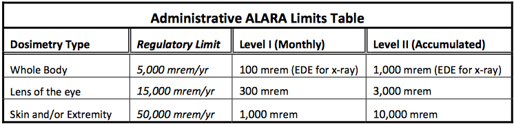
Level I will be reported to the individual. Level II requires an investigation and will be reported to the appropriate committee. (Refer to HPM 7.5)
Bioassays
Individuals who handle large amounts of volatile radionuclides may be required to participate in a bioassay monitoring program.
If you routinely handle one millicurie or more of radioactive iodine, you are required to come to Health Physics to have your thyroid monitored for uptake. The thyroid measurement should be within 72 hours following exposure and every 2 weeks if routine work continues. The bioassay should not be sooner than 6 hours.
The bioassay requirement for each project is described in the Hazards Evaluation. Note that thyroid blocking agents will not be permitted.
If you handle more than 100 millicuries of tritium, you are required to submit a urine sample to Health Physics seven to fourteen days after the experiment. The sample will be measured for tritium content. Please make arrangements with health physics prior to beginning work.
Bioassays may also be ordered by the RSO after a spill, an unusual event, or a procedure that might result in an uptake.
3.10Ordering and Receiving Radioactive Material
Orders
Order all radionuclide shipments for delivery to the following address:
Health Physics Inspection Station (CRA #) Stanford Medical Center Receiving
820 Quarry Road, Rm. H0321
Palo Alto, CA 94304
Stanford purchases must be made online through Oracle as a Standard Radioactive order. Do not use University Rapid Purchase Orders or University Purchasing Card (PCard) for radioactive materials. Order only through Procurement Services or VAPAHCS Supply Service. The CRA number on the requisition must be included when ordering.
If the vendor requests a copy of the radioactive materials license, forward the request to Health Physics.
Receipt and inspection
When the package arrives, Health Physics checks the exterior for contamination and dose rate, logs the receipt, and checks to ensure you are authorized to receive the radionuclide and amount. Health Physics will then have your package delivered to your lab. You may arrange to pick up a package if it is urgently needed.
Inspect and store promptly
Promptly inspect the package for leakage and correctness of contents. Be sure that you remove each item on the packing list, and carefully sift through dry ice and packing peanuts. Safety instructions may be provided with the package. To ensure it will not be misplaced, store all items promptly after inspection.
Remove package labels
After you remove the radioactive material from the package, remove or deface any “radioactive materials” labels before discarding the empty, uncontaminated package to house waste.
Direct delivery
If you receive material directly and it has not been inspected, inform Health Physics promptly, and if requested, bring the package to the Inspection Station. Special arrangements for direct delivery of radioactive materials from the supplier to the user must be approved by the Radiation Safety Officer (RSO) case‐by‐case.
3.11Use and Transfer Records
Daily Use Logs
After a package of radioactivity has been inspected by Health Physics, a Daily Usage Log is attached. Make an entry each day that the material is used. You may use a different form or format if all the required information is included. Keep the logs in the Radioisotope Journal or post them on the refrigerator or storage cabinet. Do not keep these logs in your individual laboratory notebook.
Sealed source storage and use
If several sealed sources are in use, they should be kept in a central location. Sources being used in experiments must be secured, properly shielded, and labeled with the radionuclide, activity, and date. The use log should identify each source, dates of removal and return, and user. If sources are moved to other authorized locations, the use log should indicate this along with the date and the name of the recipient.
Sealed source inventory
A Sealed Source Inventory that is e‐mailed quarterly lists all sealed sources. The responsible individual must personally examine each source to ensure it is on hand and in its proper place. Verify the location of the sources and return the form to Health Physics. File a copy in the Radioisotope Journal.
Leak testing
Most sealed sources must be leak tested twice each year. Health Physics provides this service. Request a leak test when you receive a new sealed source, before transferring it to another CRA, before shipping it to a vendor, or if it appears damaged.
Radionuclide Inventory Summary
An Inventory Summary form for unsealed radioactive materials is emailed each January, April, July, and October. The forms must be filled out showing disposition of materials to the nearest microcurie. Use the Daily Use Log as the source document. You can remove items that have gone through ten half‐lives and contain less than one microcurie. If you have accumulated an inventory of short‐lived stock vials, you may have to decay‐correct the entries to avoid going over your inventory limit. Indicate the primary vial location if different from the location listed. When completing the October inventory you must also physically examine each container to ensure its location and labeling are accurate.
Fax the forms to Health Physics by the date specified. If it has not been received by the due date, your incoming packages will be held at the Inspection Station until the forms are submitted. File a copy of each summary in the Radioisotope Journal.
Transfer to another CRA
Transfers of radioactive materials from one CRA to another must be reported to Health Physics with the quarterly Inventory Summary report. Before transferring radioactive material outside your CRA, verify that the person receiving the material is an authorized user of the CRA, and that the material and activity is within the limits of the CRA you are transferring the material to.
Transfer report
If the transfer exceeds ten times the Quantities of Licensed Material Requiring Labeling, print and complete a transfer form available at http://radforms.stanford.edu. Place the original and one copy into your Radioisotope Journal and provide the recipient with two copies. Both the transferor and recipient must attach a copy of the form to their respective quarterly Inventory Summary report.
Off‐campus transfer
Health Physics is the only campus group authorized to ship radioactive materials off campus. For further details and assistance, call the Inspection Station.
To ensure safety and compliance with transportation regulations, all shipments of radioactive materials from the campus must be prepared under Health Physics supervision. The shipping container must meet the appropriate US Department of Transportation specifications. The package must not be sealed until Health Physics completes its inspection.
Note that carrying radioactive material with you or in your checked airplane luggage is forbidden under Federal Aviation Administration regulations.
3.12Surveys
The purpose of a physical survey is to identify potential problems, such as poor storage or handling practices, before they actually pose a hazard, and to demonstrate that contamination levels and dose rates are well below limits. Surveys should be done the first week of each month to assure they are not inadvertently omitted, and must be done after each use in shared work areas.
Removable contamination surveys
Removable contamination surveys help identify areas where radioactivity has been spilled. Countertops, sinks, floors, refrigerators, centrifuges, fume hoods, and telephone handsets should all be considered for inclusion. Take a sample by making a 100 cm long wipe of the surface with a small piece of paper towel or a filter paper. Count the sample on the same equipment used to count your experimental samples. This is normally done on a Liquid Scintillation Counter.
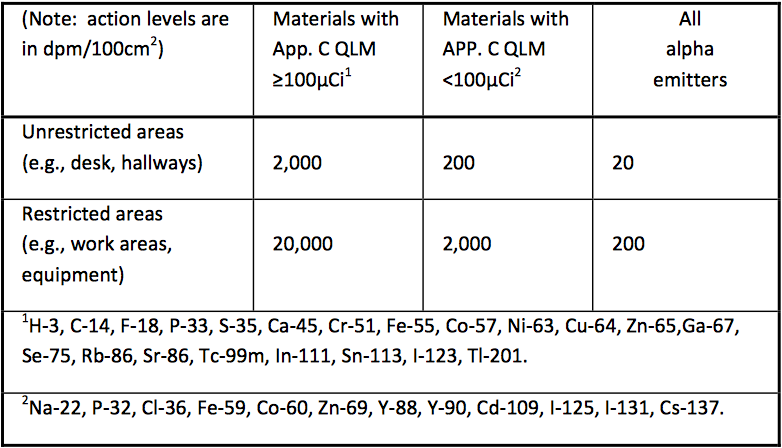
TABLE 3.3 ACTION LEVELS FOR REMOVABLE CONTAMINATION. This table provides threshold values that require corrective action if exceeded. Action levels are in dpm, not cpm. See Table 3.4. Call Health Physics if removable contamination is more than ten times the action level in unrestricted areas.
Instrument surveys
Appropriate instrument surveys (e.g., GM for high energy betas, NaI(Tl) for low energy gammas) help identify areas where radioactivity has been spilled or where it is inadequately shielded. Survey bench surfaces, your hands, clothing, and shoes. Most researchers use a survey instrument with a speaker, which responds more quickly than the meter needle movement. Perform a “battery check,” and use either a radioactive check source or a known radiation area to confirm the instrument is working before you begin. Move the detector slowly to allow the instrument time to respond.
Action Level
If you find occasionally occupied areas with a penetrating dose rate greater than 2 millirem per hour, or continuously occupied work areas with a penetrating dose rate action level greater than 0.2 millirem per hour, corrective action is required. Consult with the PI or Health Physics.
Records
Health Physics will supply a survey form that includes a room sketch. See example in Forms. Each survey record must include:
A sketch of the lab,
Locations of sample points,
Measurements in mrem/hr or dpm/100cm2,
Identification of the instrumentation used,
Background and efficiency in the instrumentation,
Surveyor’s name, and
Date
If the instrument (liquid scintillation counter) does not calculate and print dpm, but rather prints just cpm, you must determine the counting efficiency to ensure the counts per minute rate is below the cleanup threshold in Table 3.3 in dpm/100cm2. Typical counting efficiencies are noted in Table 3.4. Document surveys by completing user survey forms and enter into the Sweeps Program, https://radsurvey.stanford.edu. These surveys must be performed and entered into the Sweeps Program the first week of the month.
Building and equipment repair
Before any potentially contaminated areas or equipment, such as a glove box, hood, refrigerator, sink, or pipeline is turned over for repair, it must be surveyed. Call Health Physics. The equipment will be surveyed, de‐labeled, and marked “Cleared for repair or release to uncontrolled area.”
Equipment disposal
Notify Health Physics prior to disposal of any radiation device. Special precautions are needed, and the state may require notification.
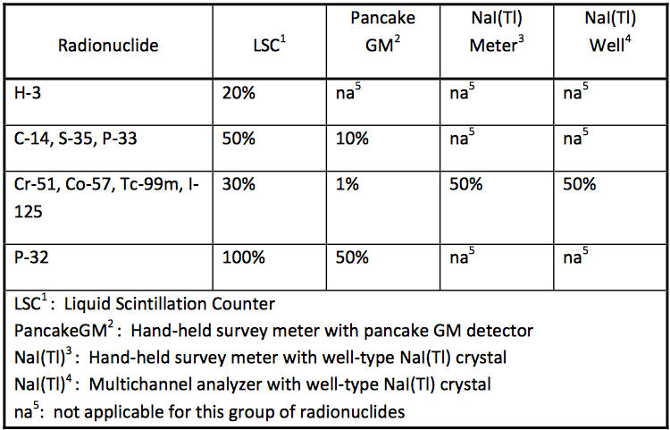
TABLE 3.4 APPROXIMATE DETECTION EFFICIENCIES FOR SOME COMMON RADIONUCLIDES AND DETECTORS. This table provides the approximate detection efficiency for the common radionuclide measurement methods. Multiply the action level from Table 3.3 by the detection efficiency to calculate the instrument cpm that indicates need for corrective action.
3.13Radioactive Waste
It is vitally important that you have accurate data concerning the isotopes and activity present in your waste. Safe disposal of radioactive waste is expensive. When designing a laboratory procedure, minimize waste generation and mixed waste streams as much as practicable.
Definition
Radioactive waste includes any items that contain radioactivity that is distinguishable above background levels using an instrument that is sensitive for the nuclide, and that is set on its most sensitive scale, and with no interposed shielding.
Detecting low energy radionuclides
Many radioactive wastes, such as H‐3, C‐14, S‐35, and I‐125 are not readily detectable with GM survey instruments. Hence, items that are in the work area where these or similar unsealed materials are present must be assumed to have been contaminated unless they are surveyed by an acceptable alternative method.
For waste contaminated with low energy beta emitters, make smear surveys and measure them with a liquid scintillation counter. For I‐125, use a NaI(Tl) scintillation detector to survey potentially contaminated items. If this is impractical, our policy is to assume that the surface is contaminated and discard it as radioactive waste.
Decontamination
Dish detergent, window cleaner, vinegar, bubble bath, waterless hand cleaner, or oven cleaner are all suitable for cleaning surface contamination. Use mild products for skin contamination.
Half‐life categories
Separate all radioactive wastes by half‐life so that short half‐life materials can be held for decay followed by incineration rather than disposal by burial.
Radioactive waste containers and log sheets
All waste containers must be labeled with the radiation symbol and a sign reading “Caution—Radioactive Materials.” For each disposal log, note the radionuclide quantity in microcuries, date of disposal, and your initials.
Do not use containers other than those provided by Health Physics To ensure radioactive waste is distinguishable from house waste.
Dry waste boxes
Place only dry, non‐decomposable wastes such as gloves, paper, and glassware in Dry Waste Boxes. Do not put any liquids, capped vials, lead shields, animals, bedding, or scat into the container. Waste that emits more than 2mrem/hr at 30 cm must be shielded. Do not shield individual items in the box; shield the entire container. Also, bag waste contaminated with volatile materials, especially iodine, prior to disposal.
Waste removal
When a container is almost full, fax a copy of the waste log to Health Physics. Be sure the room number and CRA number are on the form. Leave the pink copy of the log on the box. This will serve to identify the correct box during the pick‐up; it can be used as a log for additional disposals prior to pick‐up.
Sharps
Discard sharps, such as pipettes, syringes and needles, broken glass, razor blades, and scalpel blades into sharps containers bearing the radiation warning label and log sheet. Use separate containers for isotopes other than C‐14 and H‐3. For disposal, the full capped sharps container may be placed in a dry waste box containing the same isotope. Enter the contents of the sharps container onto the dry waste log sheet. For separate removal of sharps containers, fax the log sheet to Health Physics.
Large items
Large non‐combustible items such as contaminated equipment should not be placed in a Dry Waste Box. Call Health Physics for assistance in the disposal of such items.
Scintillation Vials
See page 56.
Aqueous waste
Material that is readily soluble in water may be disposed of into the sanitary sewer system with adequate flushing, provided that:
The material is not chemically hazardous or containing biohazardous material of BSL‐ 2 or above, or it is not medical waste other than patient urine or feces. See the following website to identify:
Contact the manager of the environmental protection program for guidance (725‐ 7529); and
The quantity per laboratory, per day, does not exceed the QLM quantity. Disposal of larger quantities of radioactive wastes via the sewer must be reviewed and have the written approval of Health Physics; and
Log each disposal of radioactivity to the sanitary sewer with the date, activity, form and your name on the Daily Use Log in the Radioisotope Journal; the properly completed Daily Use Log entries constitute the waste disposal record.
Health Physics will post sinks used for disposal of radioactive wastes with proper warning signs to alert plumbers who service the sinks. Use one sink for disposal of radioactive materials in each laboratory.
Human excreta from nuclear medicine procedures
Human excreta containing radioisotopes may be disposed of in the sanitary sewer system.
Cement kits
If you are generating small volumes of liquid waste that cannot be disposed in the sanitary sewer (see Aqueous waste above), order a cement kit. This method of disposal is required for radionuclides with a QLM value of 1 microcurie or less, except for I‐125 and I‐131 which have sewer limits of 100 microcuries per month per project. Cement cans hold about one liter. Use a different kit for each individual radionuclide.
The instructions for use are provided with the kit. For removal of filled cement kits fax the log sheet to Health Physics.
If using a cement kit for mixed waste training is required. Contact the Manager of Environmental Programs (725‐7529).
Radiological and biohazardous (BSL>2) and/or medical waste
Combined radiological and biohazardous (BSL>2) and/or medical waste materials, other than human excreta, must be deactivated prior to disposal as radioactive waste. The project staff should review the potential methods of disinfecting with Health Physics. The deactivation methods must be described by the project and reviewed and approved by the appropriate committee. Methods include autoclaving or treating with chemicals such as formalin, carbolic acid, or bleach. Note that wastes with I‐125 or I‐131 may be especially difficult to deactivate because heat and strong bleaches may drive off the radioiodine vapors, presenting airborne hazards or contaminating equipment.
Radiological and non‐ biohazardous and/or non‐medical waste
Non‐biohazardous biological (BSL 1) or non‐medical waste combined with radioactive waste must be handled as radioactive waste in accordance with California regulations.
Liquids. Follow guidance for permissible disposal in the sanitary sewer; this requires approval of Health Physics during the CRA review process. Do not autoclave combined non‐biohazardous biological‐radioactive liquid waste. Do not bleach or chemically treat combined non‐biohazardous biological‐radioactive waste to inactivate the biological organisms prior to disposal.
Solids. Dispose of non‐biohazardous biological‐radioactive waste as radioactive waste. Segregate combined biological‐radioactive waste from biological waste that would be red‐bagged.
Sharps. Use only the sharps containers provided by Health Physics. Do not discard combined biological (BSL 1)‐radioactive sharps in a sharps container that does not have the radiation symbol.
For the safety of waste handlers, please specially annotate disposal of wastes that have been treated for pathogens or infectious agents.
Mixed Waste
Mixed waste is defined as waste that contains radioactivity and chemical wastes as defined in EPA and California regulations (corrosive flammable, oxidizer, air/water reactive, toxic). These “mixed” wastes need to be specially identified and handled. Generation of mixed wastes must be approved by the appropriate local control committee before it is generated. See: http://mixedwaste.stanford.edu
Radiological and hazardous chemical waste
California hazardous waste regulations prohibit disposal of chemical materials to the sewer unless they have been shown to be non‐hazardous. EH&S has reviewed many chemical materials such as buffers and salts to determine if sanitary sewer or house waste disposal is allowable.
Search instructions will help you determine if the chemical is listed and therefore non‐hazardous. Be careful to review the conditions; many materials are non‐ hazardous only below a certain concentration.
If you have a material that is not on the list but you believe it to be non‐hazardous, or if the material can be made non‐hazardous with simple in‐lab treatment, call the Radiological Waste Program. There may be additional applicable data or testing methods. EH&S will make the determination. Treatments must be documented in your Radioisotope Journal.
If the half‐life is less than 15 days, the material may be stored for decay and then treated as chemical waste.
Mixed wastes, with prior approval, like hazardous chemical wastes may be accumulated in the laboratory for a maximum of 9 months. Submit a pick‐up request at 8 months.
Decay‐in‐storage
Decay‐in‐storage is one way to handle waste with short half‐lives. To store radioactivity for decay in the lab, the CRA application must specify the areas used to store wastes, as well as the methods used to monitor decayed wastes. Decay‐in‐ storage in the lab is limited to radionuclides with half‐lives less than 15 days.
Decay‐in‐storage requires that wastes be stored a minimum of 10 half‐lives, then surveyed. The survey must show that the radiation is indistinguishable from background. All radiation warning labels must be removed or obliterated before disposing of waste into house waste, or to chemical waste if it began as a mixed waste. File storage logs and surveys in the Radioisotope Journal.
Scintillation vials
The Radiological Waste program provides 5‐gallon buckets for liquid scintillation vials. The Stanford Hazardous Waste Label must be completed and dated when first placing an item into the bucket. Different solvents may be added to the same bucket, but you must add the name of each solvent to the label. A trade name may be used i.e. Readysafe, Cytoscint, Optiphase. Note that, under California environmental regulations, even “environmentally safe” cocktails cannot be released to the sanitary sewer.
Send or fax (723‐3759) the completed request to Radioactive Waste for pick‐up when the pail is full or 8 months old.
The following radionuclides are approved for use in scintillation vials. H‐3 and C‐14 may be combined in the same bucket.
If you need to perform liquid scintillation counting for other radionuclides, consult with Health Physics.
Vial Disposal Cost Reduction
Scintillation vials not contaminated with a radioisotope may be managed as chemical waste providing a considerable monetary savings. Please separate the vials containing radioactive contamination from those that do not and dispose of accordingly.
Carcasses, bedding, and scat
Certain freezers have been identified as collection points for carcasses, bedding, and scat. These are located in the Research Animal Facility Room RAF‐061 C and D or for imaging isotopes with half‐lives of less than 3 days at Clark S035. For other areas, call Health Physics at 723‐3201.
If animals have been etherized, let the carcasses air out thoroughly in a fume hood before placing them in the freezers to avoid the risk of fire or explosion from the ether fumes.
Discard contaminated bedding, carcasses, and scat, segregated by the half‐life category, into double plastic bags. In respect of public sensitivities, please use an opaque outer bag. Tag all animal waste on the outside of the bag indicating isotope, activity, date of disposal, and account number to be charged. Tags are available at the freezer. Also, fill in the log sheet on the freezer door.
Note: Always use the log sheets provided with the waste containers.
Charges for radioactive waste at Stanford
Radioactive waste charges are included in laboratory overhead. However, please be careful that you do not needlessly create waste, or mix non‐radioactive waste into the waste stream. Projects that generate extraordinary amounts of waste may be billed extra.
3.14Problems Related to Radioactive Wastes
Experience over the years has identified several incorrect practices that cause additional cost and time.
Incomplete Waste Log sheets
The incorrect documentation or segregation of waste or incomplete labeling may result in the mismanagement of materials and potential violations.
Radioactive waste in non-radioactive trashcans
Survey items in and around radioactive material work areas prior to disposing of the items into non‐radioactive waste. If radioactive waste is improperly released to a sanitary landfill, it will demonstrate a loss of control in the laboratory. This can result in a citation, a civil penalty, and a press release by the regulatory authority.
Mixed half‐life categories
External radiation readings found on boxes whose logs have only H‐3 or C‐14 entries indicates that categories have been mixed. Properly segregate the materials by half‐ life category and log the materials being disposed of at the time of disposal.
Secondary containment
Place all collection bottles in secondary containment, such as a beaker or bucket. Keep bottle waste in a well‐ventilated area such as a fume hood. Observe fire safety practices.
Box flaps and box shields
Do not push waste box flaps down into the box, this makes retrieval of the flap difficult, and increases the potential for contaminating the box, your hands, and the lab. Do not force a box into a shield; it is difficult to remove when it is full. Health Physics can identify manufacturers whose shields easily accommodate our waste boxes.
Mixed waste
Disposal of mixed hazardous waste is a growing problem here and elsewhere. Special permission is required prior to generating mixed waste. Please make every effort to segregate hazardous waste streams such as reactive chemicals and biologics.
Non‐radioactive waste
At the VAPAHCS, survey all regular non‐radioactive waste to ensure it is free of contamination. Then place it in the corridor for pickup.
3.15Response to Spills, Losses, and Other Incidents
Purpose
Incident response procedures are designed to bring an out‐of‐control situation to a condition that will minimize the risk to workers and the public. Procedures directed towards containing the source of the risk are not meant to recover the situation, but rather to keep the situation from getting worse. Procedures for personnel decontamination are designed to remove as much contamination as possible without damaging the contaminated skin.
Assistance
If you need assistance to bring an incident under control, or guidance on how to recover from it, call Health Physics. Telephone numbers are on the back cover.
Incident records
After you have recovered from an incident, determine its cause and effects. Consider whether procedures, equipment, facilities, or training should be modified to reduce the chance of recurrence. File a record of this in the Radioisotope Journal so that others can learn from your experience.
Surface decontamination
Dish detergent, window cleaner, vinegar, bubble bath, waterless hand cleaner, or oven cleaner are all suitable for cleaning items.
Skin decontamination
Carefully remove contaminated clothing. When cleaning skin, rinse generously, use mild soaps, and take care to not abrade the surface. Simply soaking skin in a mild detergent solution, vinegar, or bubble bath may remove most contamination.
Response procedures
There are ten different incident response procedures provided on the following pages. Select the one that is most appropriate depending on the physical form and source strength of the radiation source.
Small spills: liquids and powders less than the QLM quantity (Note: see separate discussion below for spills involving positron emitters)
Notify persons in the area that a spill has occurred.
Prevent the spread of contamination by covering the spill with absorbent paper.
Clean up the spill using disposable gloves and absorbent paper. Carefully fold the absorbent paper with the clean side out and place in a plastic bag for transfer to a radioactive waste container. Also put the contaminated gloves and any other contaminated disposable material in the bag.
With a low‐range radiation detector survey meter, survey the area around the spill, your hands, clothing, and shoes for contamination. Wash contaminated skin. All personnel contamination (e.g. shoes, skin, clothing) must be reported to Health Physics via phone call.
Report the spill to the PI.
Moderate spills: liquids and powders ≤ 1000x the QLM quantity
Notify persons in the area that a spill has occurred.
Prevent the spread of contamination by covering the spill with absorbent paper.
Clean up the spill using disposable gloves and absorbent paper. Carefully fold the absorbent paper with the clean side out and place it in a plastic bag for transfer to a radioactive waste container. Also put the contaminated gloves and any other contaminated disposable material in the bag.
With a low‐range radiation detector survey meter, survey the area around the spill, your hands, clothing, and shoes for contamination. Wash contaminated skin. All personnel contamination (e.g. shoes, skin, clothing) must be reported to Health Physics via phone call.
Report the spill to Health Physics via phone.
Large spills: liquids and powders more than 1000x the QLM quantity
Clear the area. Order all persons not involved in the spill to vacate the room.
If you can do it safely, prevent the spread of contamination by covering the spill with absorbent paper, but do not attempt to clean it up. To prevent the spread of contamination, limit the movement of all personnel who may be contaminated.
Shield the source if possible. This should be done only if it can be done without further contamination or a significant increase in your radiation exposure.
Notify Health Physics immediately.
With a low‐range radiation detector meter, survey your hands, clothing, and shoes for contamination. Wash contaminated skin.
Health Physics will supervise the cleanup of the spill.
Spill procedures for positron emitters‐ dose rate < 5 mrem/hour at one meter
Notify persons in the area that a spill has occurred.
Survey the spill to determine the dose rate.
Prevent the spread of contamination by covering the spill with absorbent paper.
Clean up the spill using disposable gloves and absorbent paper.
With a low‐range radiation detector survey meter, survey your hands, clothing, shoes, and the area around the spill for contamination. Wash contaminated skin.
Report the spill to the PI.
Spill procedures for positron emitters‐ dose rate < 20 mrem/hour at one meter
Notify persons in the area that a spill has occurred.
Survey the spill to determine the dose rate.
Survey all who are leaving the area for contamination.
If personnel are contaminated, wash the contaminated area with mild soap andwater, and contact PI or Health Physics immediately.
If the spill is small in area place absorbent pad and lead brick at the same timeon the spill.
If the spill is too large in area to be covered by a lead brick, contact HealthPhysics immediately.
After covering, survey the spill area again. If the dose rate is below or equal to 5mrem per hour at 30 cm from the shield surface, label the top of the brick with the nuclide and time of day. Allow the spill to decay in place. If the dose rate is greater than 5 mrem per hour at 30 cm, then add additional shielding to reach this level.
Report the spill to the PI and Health Physics.
Spill procedures for positron emitters‐ dose rate > 20 mrem/hour at one meter
Notify persons in the area that a spill has occurred.
Survey the spill to determine the dose rate.
Order all persons not involved in the spill to vacate the area.
Survey all who are leaving the area for contamination. Remove all contaminated clothing.
If personnel are contaminated, wash the contaminated area with mild soap and water, and contact Health Physics immediately.
If the dose rate is less than 100 mrem per hour at one meter and the spill is small in area and can be covered by a lead brick, then place absorbent pad and lead brick at the same time on the spill.
Report the spill to the PI and Health Physics
Spill procedures for positron emitters: When is Health Physics presence required?
If the spill is too large an area to be covered by a lead brick.
If the dose rate is greater than 100 mrem per hour.
If personnel are contaminated.
Ensure there is no entry into the area until Health Physics arrives.
Stuck sources in irradiators
Jiggle the handle to return the source to the stored position.
Activate the manual off control.
If area monitors are alarming, stay out of the beam and close the door. Do not attempt to remove your samples.
Order all persons to leave the room.
Secure the room to prevent entry.
Notify the PI and Health Physics immediately.
Loss, theft, or disappearance of radioactive materials or a radiation device
1. Ask co‐workers if they know where the material is.
2. If they don’t know, promptly call Health Physics. Give your name, the CRA number, and a description of the missing material.
3. Continue to look for the material and interview co‐workers pending arrival of Health Physics.
Unusual events
Although there may or may not be personnel exposure, other unusual events, such as unexpected or widespread contamination, missing or unexpected packages, missing or extra waste, indicate a possible breakdown in administrative or technical procedures. Call Health Physics for assistance.
4Resources
4.1Safety Data Sheets and Forms
Safety Data Sheets
Health Physics has prepared safety data sheets (SDS) for many radionuclides. They provide information about the physical properties of the nuclide such as decay mode, energy, half-life, QLM quantity, and decontamination information. Safety data sheets for the most commonly used radionuclides can be found in the Reference section of this website.
Forms
There are a number of commonly used forms related to radiation safety. See the list below for access to these forms.
Use the tables below for commonly used conversions.
Radiation Doses
rem
sievert
0.1 mrem
1 µSv
1 mrem
10 µSv
10 mrem
100 µSv (0.1 mSv)
100 mrem
1 mSv
500 mrem
5 mSv
1 rem
10 mSv
5 rem
50 mSv
10 rem
100 mSv
25 rem
250 mSv
50 rem
500 mSv
100 rem
1 Sv
Radiation Amount
curie
becquerel
1 pCi
37 mBq
27 pCi
1 Bq
1 nCi
37 Bq
27 nCi
1 kBq
1 µCi
37 kBq
27 µCi
1 MBq
1 mCi
37 MBq
27 mCi
1 GBq
1 Ci
37 GBq
27 Ci
1 TBq
1 kCi
37 TBq
27 kCi
1 PBq
1 MCi
37 PBq
SI Units Prefixes
E
exa
1018
P
peta
1015
T
tera
1012
G
giga
109
M
mega
106
k
kilo
103
c
centi
10-2
m
mili
10-3
µ
micro
10-6
n
nano
10-9
p
pico
10-12
Guide to SI Units
Temperature
Celsius
Fahrenheit
3000°C
5432°F
2500°C
4532°F
2000°C
3632°F
1500°C
2732°F
1000°C
1832°F
800°C
1472°F
600°C
1112°F
400°C
752°F
200°C
392°F
100°C
212°F
50°C
122°F
0°C
32°F
-17.8°C
0°F
Pressure (Pascal)
1 Pa = 1.45 x 10-4 psi
1M Pa = 145 psi
Speed
1 m/s ~ 2 mph
Volume
1 m³ = 10 ³ℓ
1 cc (cm³) = 1 mℓ
1 cc ~ 1 gram water
3785 cc/gal 7.48 gal/ft³
Area
1 km² = 106 m²
1 m² ~ 11 ft²
Absorbed Energy
100 rad = 1 Gy (gray)
These tables were prepared By U.S. NRC AEOD/IRB 1/90
4.3Signs and Labels
Most of these signs and labels are available from Health Physics. Be sure names and telephone numbers are up-to-date.
Work Area
Mark bench tops and other surfaces where open radiochemicals are handled. Red on yellow.
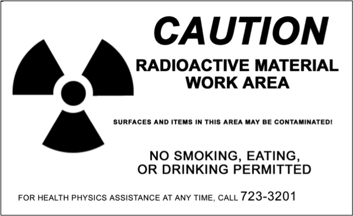
General Notice
Mark the doors to areas where devices and radiochemicals are handled or stored. Red on yellow.
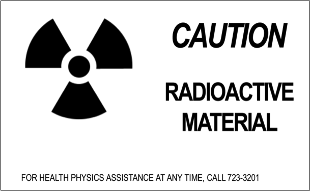
Appliances, Hoods, and Cabinets
Mark equipment that has held radiochemicals. Red on yellow.
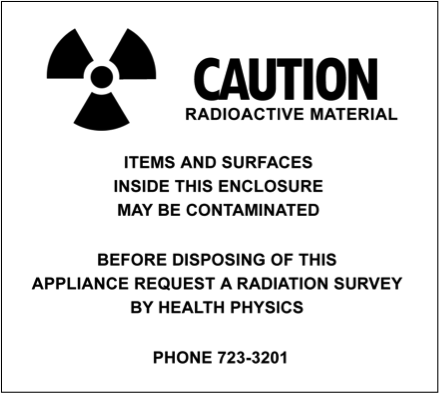
Desk Area
Mark areas dedicated to office work where there will be no radiochemicals. Black on green.
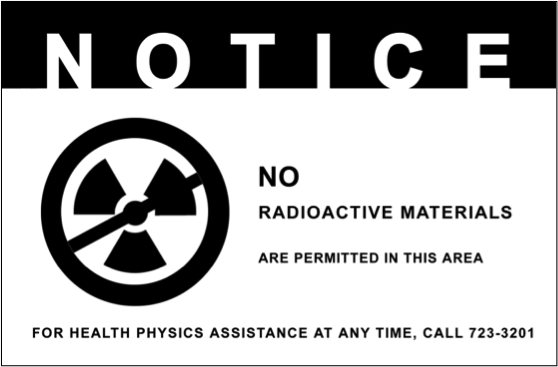
Sink for Disposal
Mark the inside of the cabinet door of a sink that has been used for radiochemical disposal. Red on yellow.
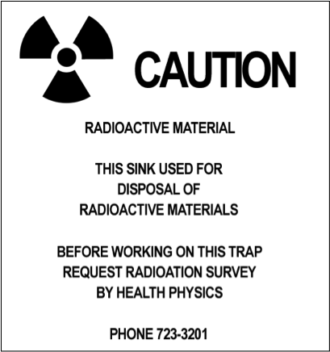
Animal Cages
Mark individual cages or cage racks if animals have been administered radiochemicals. Red on yellow. Also post the room with an animal care instruction form.
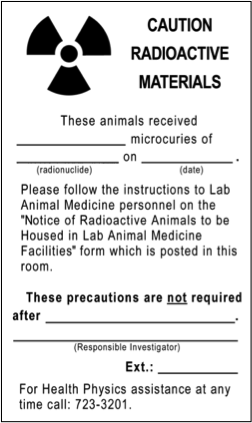
Electronic Equipment
Label the control panel. Burgundy on yellow.
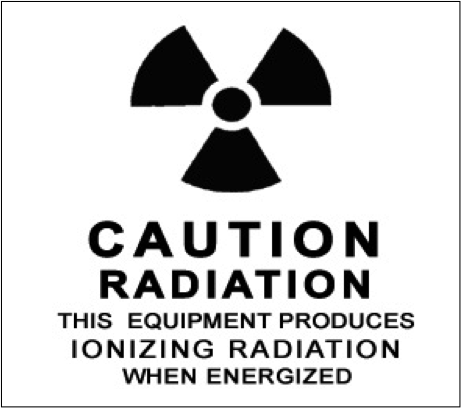
X-ray Diffraction Units
Label the control panel and the sample chamber door. Red on yellow.